<!doctype html>
<html lang="en">
<head>
  <meta charset="utf-8">
  <meta name="viewport" content="width=device-width, initial-scale=1">
  <title>arxiv digest — 2026-06-05</title>
  <style>
:root {
  --bg: #ffffff;
  --fg: #1f2328;
  --muted: #59636e;
  --border: #d0d7de;
  --card: #f6f8fa;
  --link: #0969da;
}
body {
  max-width: 980px;
  margin: 0 auto;
  padding: 2rem 1rem 5rem;
  font-family: -apple-system, BlinkMacSystemFont, "Segoe UI", Helvetica, Arial, sans-serif;
  line-height: 1.55;
  color: var(--fg);
  background: var(--bg);
}
a { color: var(--link); }
img { max-width: 100%; height: auto; }
pre, code { background: var(--card); border-radius: 6px; }
pre { padding: 1rem; overflow-x: auto; }
blockquote { border-left: 4px solid var(--border); padding-left: 1rem; color: var(--muted); }
details { margin: 0.6rem 0; }
summary { cursor: pointer; font-weight: 600; }
.paper-figures-scroll {
  display: flex;
  gap: 1rem;
  overflow-x: auto;
  overscroll-behavior-x: contain;
  padding: 0.75rem 0.25rem 1rem;
  margin: 1rem 0 1.25rem;
  border-top: 1px solid var(--border);
  border-bottom: 1px solid var(--border);
  scroll-snap-type: x proximity;
}
.paper-figure-card {
  flex: 0 0 min(260px, 72vw);
  scroll-snap-align: start;
  background: var(--card);
  border: 1px solid var(--border);
  border-radius: 12px;
  padding: 0.55rem;
}
.paper-figure-card img {
  display: block;
  width: 100%;
  max-height: 240px;
  object-fit: contain;
  background: white;
  border-radius: 8px;
}
.paper-figure-caption {
  display: block;
  margin-top: 0.5rem;
  color: var(--muted);
  font-size: 0.85rem;
}
.figure-strip-hint {
  color: var(--muted);
  font-size: 0.9rem;
  margin-bottom: -0.3rem;
}
</style>
  <!-- MathJax: renders $...$ inline math and $$...$$ display math, plus
       \(...\) and \[...\]. Loaded from the official CDN; works offline
       once cached. Configured to skip code/pre blocks so arxiv IDs that
       look like dollar amounts don't get mangled. -->
  <script>
    window.MathJax = {
      tex: {
        inlineMath: [['$', '$'], ['\\(', '\\)']],
        displayMath: [['$$', '$$'], ['\\[', '\\]']],
        processEscapes: true,
        processEnvironments: true
      },
      options: {
        skipHtmlTags: ['script', 'noscript', 'style', 'textarea', 'pre', 'code'],
        ignoreHtmlClass: 'tex2jax_ignore',
        processHtmlClass: 'tex2jax_process'
      }
    };
  </script>
  <script id="MathJax-script" async
    src="https://cdn.jsdelivr.net/npm/mathjax@3/es5/tex-chtml.js"></script>
</head>
<body>
<header style="background-color: #333; color: white; padding: 15px; margin-bottom: 20px;">
  <h1 style="margin: 0; font-size: 24px;">
    <a href="https://ochelpan.github.io/arXiv_clean/" style="color: white; text-decoration: none;">Main</a>
  </h1>
</header>

<h1>Daily arXiv Report</h1>

<hr>
<p>
<a href="index.html">← Index</a>
 · <a href="papers_04.html">← Previous</a> · <a href="papers_06.html">Next →</a>
</p>
<hr>

<h2>Papers 81–100</h2>
<p><a id="paper-2606.05387"></a></p>
<h3 id="feature-encoding-in-quantum-machine-learning-a-survey-and-practical-guidelines"><a href="http://arxiv.org/abs/2606.05387v1">Feature Encoding in Quantum Machine Learning: A Survey and Practical Guidelines</a></h3>
<p><strong>Authors:</strong> Vincenzo Sammartino<br>
<strong>Type:</strong> theory · <strong>Category:</strong> quantum information and computing · <strong>PDF:</strong> <a href="https://arxiv.org/pdf/2606.05387v1">https://arxiv.org/pdf/2606.05387v1</a><br>
<strong>Analysis basis:</strong> full PDF text, analyzed in chunks</p>
<div class="figure-strip-hint">↔ Scroll figures horizontally</div>
<div class="paper-figures-scroll">
<figure class="paper-figure-card">
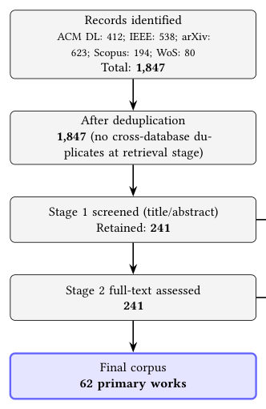
<figcaption class="paper-figure-caption"><b>Fig 1.</b> Fig. 1. PRISMA-adapted screening flow for the systematic corpus assembly. Five databases were queried using three thematic Boolean strings (see section 2). The final corpus of 62 primary works covers the period 2017–2026.</figcaption>
</figure>
<figure class="paper-figure-card">
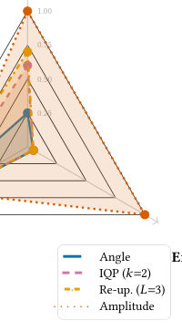
<figcaption class="paper-figure-caption"><b>Fig 2.</b> Fig. 2. Three-axis cost–expressivity–robustness taxonomy for the four principal encoding families. Each axis is normalised to [0, 1]: Expressivity = log-normalised Fourier degree from theorem 1; Noise Robustness = encoding-layer fidelity 𝐹enc at 𝑝2 = 3 × 10−3, 𝐷= 64 from proposition 2; Qubit Efficiency = log2(𝐷) /𝑞(E, 𝐷), normalised so that amplitude encoding scores 1.00. No encoding dominates all three axes simultaneously; the Pareto analysis in section 7 resolves this trilemma for specific hardware regimes.</figcaption>
</figure>
<figure class="paper-figure-card">
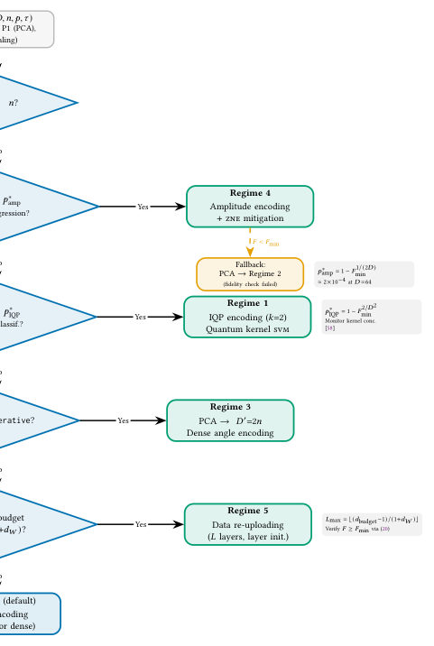
<figcaption class="paper-figure-caption"><b>Fig 3.</b> Fig. 3. Annotated decision tree for encoding selection (Algorithm 1). Decision nodes (blue diamonds) test hardware feasibility conditions derived analytically in sections 4 and 5; the critical thresholds 𝑝∗ amp and 𝑝∗ IQP are computed via eq. (21) for the given (𝐷, 𝐹min). Leaf nodes (green rectangles) give encoding recommendations for each of the five regimes. The orange dashed path is the fallback triggered by a failed fidelity check in Regime 4; annotation boxes (grey) state the relevant analytical expressions inline. All inputs are defined in ??.</figcaption>
</figure>
<figure class="paper-figure-card">

<figcaption class="paper-figure-caption"><b>Fig 4.</b> Figure 4 plots the Pareto frontier in the two-dimensional space of expressivity (Fourier degree, as a proxy for model</figcaption>
</figure>
<figure class="paper-figure-card">
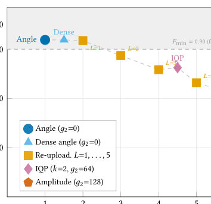
<figcaption class="paper-figure-caption"><b>Fig 5.</b> Fig. 4. Pareto frontier in the expressivity–robustness plane at 𝑝1 = 10−3, 𝑝2 = 3 × 10−3, 𝐷= 64. All fidelity values are computed analytically from proposition 2 as 𝐹enc = (1 −𝑝2)𝑔2 (1 −𝑝1)𝑔1, using gate counts from table 3. Expressivity is measured as the maximum Fourier degree per feature dimension (theorem 1); amplitude encoding’s “Full” label denotes access to the complete 2𝑛-dimensional Hilbert space, incommensurable with the integer Fourier-degree scale. The grey band marks the feasibility region 𝐹≥𝐹min = 0.90 (??). The re-uploading family (orange squares) traces a continuously tunable curve that crosses the feasibility threshold between 𝐿= 3 and 𝐿= 4 at the stated hardware parameters.</figcaption>
</figure>
</div>
<p><strong>Summary.</strong> This survey systematically reviews quantum feature encoding techniques for QML on noisy hardware. It develops a comprehensive taxonomy classifying encodings based on cost, expressivity, and robustness. The central finding is that practical performance favors shallow angle encodings over exponentially powerful amplitude encodings when device error rates are non-negligible.</p>
<p><strong>Why it may be interesting.</strong> This work provides crucial, hardware-aware guidelines for applying QML theory to real-world NISQ devices by quantifying the trade-offs between theoretical power and physical noise limitations.</p>
<details>
<summary>Detailed structure</summary>
<p><strong>Main problem.</strong> The encoding of classical data into quantum states is identified as the primary performance bottleneck limiting Quantum Machine Learning (QML) on Noisy Intermediate-Scale Quantum (NISQ) devices.</p>
<p><strong>Main result.</strong> For current noise levels ($p \gtrsim 10^{-3}$), shallow angle-based encodings consistently outperform theoretically superior but noise-sensitive amplitude encoding in practice.</p>
<p><strong>Method.</strong> The authors conducted a systematic literature review and developed a multi-faceted decision framework that jointly characterizes resource cost, expressivity (via Fourier analysis), and noise robustness for various encoding families.</p>
<p><strong>Model / system.</strong> The study analyzes the mapping of classical feature vectors $x \in \mathbb{R}^D$ to quantum states $|\psi(x)
angle$ using parameterized quantum circuits (PQCs) on NISQ hardware. The comparison spans multiple encoding types: basis, angle, amplitude, and IQP.</p>
<p><strong>Key observables.</strong> State fidelity ($\mathcal{F}$), resource cost (qubit count $n$, gate count $g_2$, circuit depth $d$), Fourier expressivity (frequency spectrum $\Omega$), and the critical error rate ($p^*$).</p>
<p><strong>Important parameters / regimes.</strong> Feature dimension ($D$), qubit budget ($n$), physical error rate ($p$), and task type ($    au$). Critical thresholds include $p^* \approx 10^{-3}$ for amplitude encoding viability.</p>
<p><strong>Assumptions / limitations.</strong> The analysis relies on modeling decoherence using CPTP maps under NISQ conditions, and it assumes that the performance trade-offs can be captured by analyzing these measurable resource metrics.</p>
<p><strong>Figures summary.</strong> A three-axis taxonomy visualizes the trade-off between Expressivity, Noise Robustness, and Qubit Efficiency. A five-regime decision framework guides practitioners based on input parameters $(D, n, p, 	au)$.</p>
<p><strong>Paper structure.</strong> The paper systematically reviews existing literature to establish a comprehensive taxonomy of encoding families, derives theoretical bounds relating depth/fidelity to error rates, unifies the analysis across trainability metrics (Fourier spectrum, barren plateaus), and culminates in a practical five-regime decision framework.</p>
</details>
<details>
<summary>Abstract</summary>
<p>The encoding of classical data into quantum states constitutes the primary performance bottleneck in Quantum Machine Learning (qml) on Noisy Intermediate-Scale Quantum (nisq) devices. No existing framework jointly characterises resource cost, expressivity, and noise robustness, nor provides actionable selection guidelines for practitioners. This survey addresses that gap through a systematic review of 66 primary works (2017-2026) assembled via a PRISMA-adapted protocol across five academic databases. Four principal contributions are made. First, a three-axis cost-expressivity-robustness taxonomy classifies all major encoding families - basis, angle, dense-angle, amplitude, data re-uploading, and IQP - along independently measurable axes. Second, closed-form depth-fidelity bounds under nisq decoherence channels identify the critical gate-error rate p* ~ 10^-3 below which amplitude encoding is viable. Third, a unified treatment of Fourier expressivity, barren-plateau onset, and quantum kernel concentration as functions of the encoding circuit provides the first joint trainability analysis. Fourth, a five-regime decision framework maps (D, n, p, tau) - feature dimension, qubit budget, error rate, and task type - to a hardware-grounded encoding recommendation. The central finding is that for p &gt;= 10^-3, shallow angle-based encodings consistently outperform amplitude encoding in practice, despite the latter's exponential qubit advantage.</p>
</details>
<p><sub><a href="#top">↑ back to top</a></sub></p>

<p><a id="paper-2606.05397"></a></p>
<h3 id="multi-qubit-dyadic-phase-fixing-for-fault-tolerant-quantum-compilation"><a href="http://arxiv.org/abs/2606.05397v1">Multi-Qubit Dyadic Phase Fixing for Fault-Tolerant Quantum Compilation</a></h3>
<p><strong>Authors:</strong> Justin Kalloor, Mathias Weiden, Ed Younis, John Kubiatowicz, Costin Iancu<br>
<strong>Type:</strong> theory · <strong>Category:</strong> quantum information and computing · <strong>PDF:</strong> <a href="https://arxiv.org/pdf/2606.05397v1">https://arxiv.org/pdf/2606.05397v1</a><br>
<strong>Analysis basis:</strong> full PDF text, analyzed in chunks</p>
<div class="figure-strip-hint">↔ Scroll figures horizontally</div>
<div class="paper-figures-scroll">
<figure class="paper-figure-card">
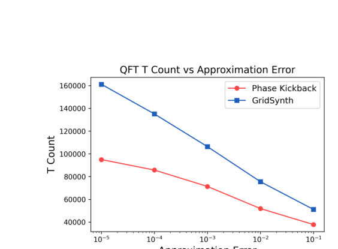
<figcaption class="paper-figure-caption"><b>Fig 1.</b> Fig. 1: T-gate counts for the Quantum Fourier Transform circuit, comparing Rz decomposition via Phase Kickback against standard rotation synthesis (gridsynth). Phase kickback achieves signifi- cantly lower T-counts for angles of the form 2π</figcaption>
</figure>
<figure class="paper-figure-card">
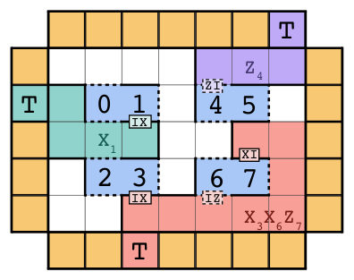
<figcaption class="paper-figure-caption"><b>Fig 2.</b> Fig. 2: Standard bus architecture for surface code qubit patches ( [16], [21], [28]). The routing qubits (blank squares) allow for logical all-to-all connectivity. Pauli Products (red, green, and purple regions) in the same cycle can be scheduled in parallel if there are non- overlapping paths through the routing qubits. The perimeter contains magic state cultivation qubits (yellow) which generate resource states as per [13]. When the resource states have a T state ready, they can be used in a Pauli measurement. The final space-time volume of the mapped circuit is the number of logical cycles × all of the qubits in the architecture (data, routing, and resource).</figcaption>
</figure>
<figure class="paper-figure-card">
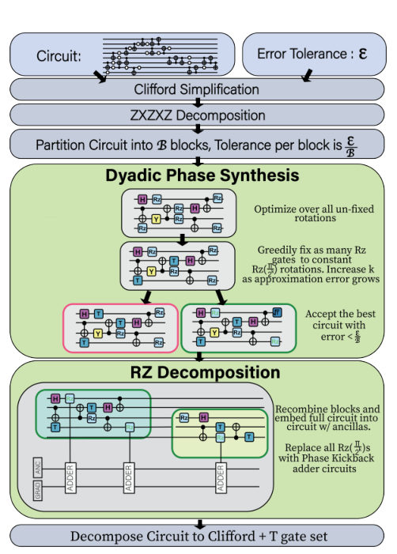
<figcaption class="paper-figure-caption"><b>Fig 3.</b> Fig. 3: High-level overview of our end-to-end compilation workflow. We accept a logical circuit in any gate set along with an acceptable approximation error tolerance. The circuit is partitioned into blocks and each block is simplified with BQSKit-FT [33]. Each block is then passed to our Dyadic Phase Fixing routine, which greedily extracts dyadic Rz rotations from the circuit. The resulting circuit is decomposed to the Clifford+T gate set and can be mapped to a given QEC code and architecture.</figcaption>
</figure>
<figure class="paper-figure-card">
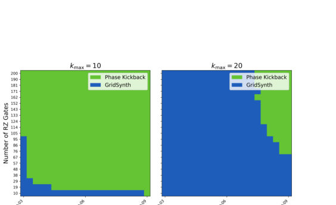
<figcaption class="paper-figure-caption"><b>Fig 4.</b> Fig. 4: Decision matrix comparing T-gate counts between Phase Kickback and gridsynth as a function of approximation error threshold and number of fixed Rz gates, shown for k = 10 (left) and k = 20 (right). Green indicates configurations where phase kickback achieves fewer T gates; Blue indicate where standard gridsynth is preferable. phase kickback model uses the adder T-count of [12] together with the phase gradient state preparation cost. By sweeping over all candidate k values from 4 to kmax, the compiler selects the register size kreg that minimizes the overall T- gate count according to these models. When the decision matrix determines that no value of k yields a net benefit, the...</figcaption>
</figure>
<figure class="paper-figure-card">
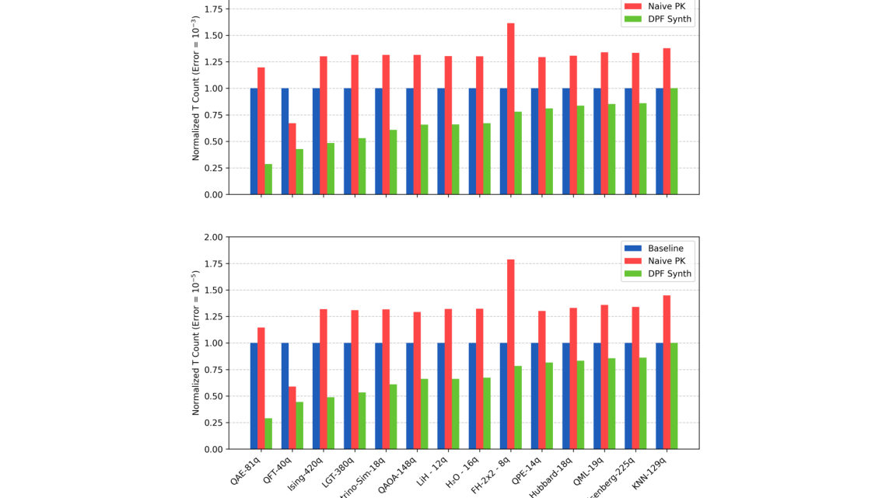
<figcaption class="paper-figure-caption"><b>Fig 5.</b> Fig. 5: Normalized T-gate counts across all benchmarks, comparing Baseline compilation, Naive Phase Kickback (Naive PK), and Dyadic Phase Fixing Synthesis (DPF Synth) at error thresholds of 10−3 and 10−5.</figcaption>
</figure>
</div>
<p><strong>Summary.</strong> The paper introduces Dyadic Phase Fixing (DPF), a general synthesis tool that optimizes the compilation of quantum circuits into the T-gate restricted set required for fault tolerance. By extending phase kickback, DPF significantly reduces the necessary number of costly T gates compared to existing methods. Crucially, it also warns that while T-count is important, physical resource metrics like space-time volume must be considered alongside gate count minimization.</p>
<p><strong>Why it may be interesting.</strong> This work directly addresses resource optimization in quantum computation, which is critical for realizing large-scale quantum processors. The detailed analysis of cost trade-offs (T-count vs. volume) provides crucial guidelines for compiler design relevant to any physical platform.</p>
<details>
<summary>Detailed structure</summary>
<p><strong>Main problem.</strong> The primary challenge is efficiently compiling arbitrary quantum circuits into the fault-tolerant Clifford+T gate set while minimizing the resource cost, dominated by T gates.</p>
<p><strong>Main result.</strong> The proposed Dyadic Phase Fixing (DPF) synthesis achieves significant reductions (up to 70%) in T-gate count compared to established methods like gridsynth on diverse benchmarks.</p>
<p><strong>Method.</strong> DPF extends phase kickback by using numerical unitary synthesis to greedily extract dyadic angle rotations from general circuits, optimizing the trade-off between T-count reduction and ancilla overhead.</p>
<p><strong>Model / system.</strong> The work models fault-tolerant quantum computation implemented on architectures like the surface code. The compilation process translates high-level unitaries into a sequence of Clifford and $Rz$ gates, which are then mapped to physical operations.</p>
<p><strong>Key observables.</strong> T-gate count (primary metric), space-time volume, approximation error ($\epsilon$), and ancilla qubit overhead.</p>
<p><strong>Important parameters / regimes.</strong> The precision threshold $\epsilon$, the size of the phase gradient register ($k_{reg}$), and the choice between different Pauli basis computation schemes (LPBC vs. HPBC).</p>
<p><strong>Assumptions / limitations.</strong> T-count is a useful but incomplete proxy for total fault-tolerant cost, as space-time volume can diverge from T-count savings due to CNOT overhead.</p>
<p><strong>Figures summary.</strong> Figures compare T-gate counts across benchmarks (QFT, QAE, etc.) showing DPF's advantage over baseline methods; other figures detail the decision matrix comparing synthesis techniques and plot resource costs vs. register size.</p>
<p><strong>Paper structure.</strong> The paper introduces the problem of fault-tolerant compilation, details the DPF method using unitary synthesis and a decision matrix to select optimal phase kickback parameters, presents quantitative results showing T-count reduction, and concludes by analyzing the limitations regarding space-time volume overhead.</p>
</details>
<details>
<summary>Abstract</summary>
<p>Fault-tolerant quantum computing requires translating application-level quantum circuits into the Clifford+$T$ gate set, where the $T$ gate is the dominant resource cost. Phase kickback is an ancilla-based technique that can dramatically reduce $T$-count for rotations with dyadic angles, but has previously been limited to highly structured circuit families. We present Dyadic Phase Fixing (DPF), a general multi-qubit synthesis tool that extends phase kickback to general quantum circuits. DPF uses numerical unitary synthesis to greedily extract dyadic angle rotations from any input circuit. Combined with a decision matrix to automatically size the final phase gradient register, our end-to-end workflow achieves up to 70% reduction in $T$-count compared to \texttt{gridsynth} and up to 60% compared to Repeat-Until-Success synthesis on a diverse set of benchmarks. We map these compiled circuits to a surface-code architecture to evaluate space-time volume, demonstrating up to a 60\% reduction in this metric as well. However, for some circuits and mapping strategies the two metrics diverge significantly, demonstrating that $T$-count alone is a useful but incomplete proxy for fault-tolerant program costs.</p>
</details>
<p><sub><a href="#top">↑ back to top</a></sub></p>

<p><a id="paper-2606.06442"></a></p>
<h3 id="nanostructure-modelling-with-early-fault-tolerant-quantum-computers"><a href="http://arxiv.org/abs/2606.06442v1">Nanostructure modelling with early fault tolerant quantum computers</a></h3>
<p><strong>Authors:</strong> Zhu Sun, Christian Binder, Balint Koczor, Simon Benjamin<br>
<strong>Type:</strong> theory · <strong>Category:</strong> strongly correlated electrons · <strong>PDF:</strong> <a href="https://arxiv.org/pdf/2606.06442v1">https://arxiv.org/pdf/2606.06442v1</a><br>
<strong>Analysis basis:</strong> full PDF text, analyzed in chunks</p>
<div class="figure-strip-hint">↔ Scroll figures horizontally</div>
<div class="paper-figures-scroll">
<figure class="paper-figure-card">
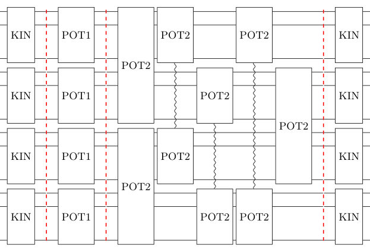
<figcaption class="paper-figure-caption"><b>Fig 1.</b> FIG. 1. A schematic circuit diagram for one Trotter step for np = 4. The KIN, POT1 and POT2 operations correspond to the K, U and V terms acting on one- and two-particle registers, respectively. Note that the POT2 operations in stage C can be executed in 3 layers.</figcaption>
</figure>
<figure class="paper-figure-card">
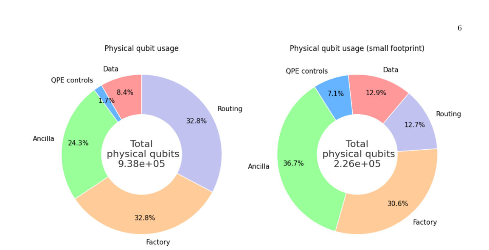
<figcaption class="paper-figure-caption"><b>Fig 2.</b> FIG. 2. The logical qubit usage breakdown for np = 4 illustrated in pie chart. Left: Pie chart for beat limited computation. Right: Pie chart for tick limited computation with 5 magic state factories.</figcaption>
</figure>
<figure class="paper-figure-card">
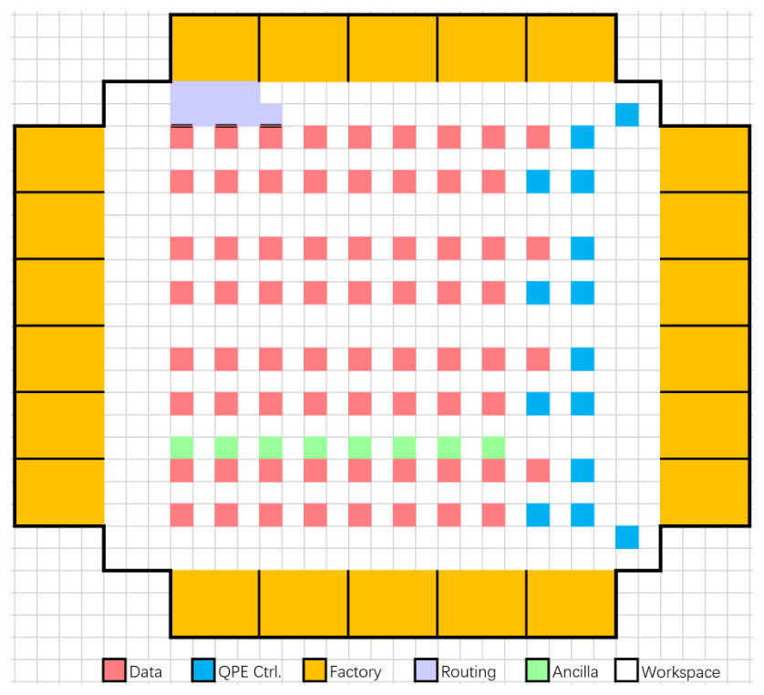
<figcaption class="paper-figure-caption"><b>Fig 3.</b> FIG. 3. A possible layout of logical qubits for the case np = 4 and nq = 8 on rotated surface code, assuming beat-limited computation. The red patches denote data qubits storing the quantum state of the system, while the blue patches represent the control qubits for QPE. Each 8T-to-CCZ factory comprises 12 orange patches, separated by thin black lines. The purple region at the top illustrates an example of routing for teleporting a CCZ state; the double lines indicate measurements at the boundaries. The green patches at the bottom are active ancilla, showing an example of implementing 8 single-qubit rotations in parallel. The white patches represent workspace qubits that can be used for...</figcaption>
</figure>
<figure class="paper-figure-card">
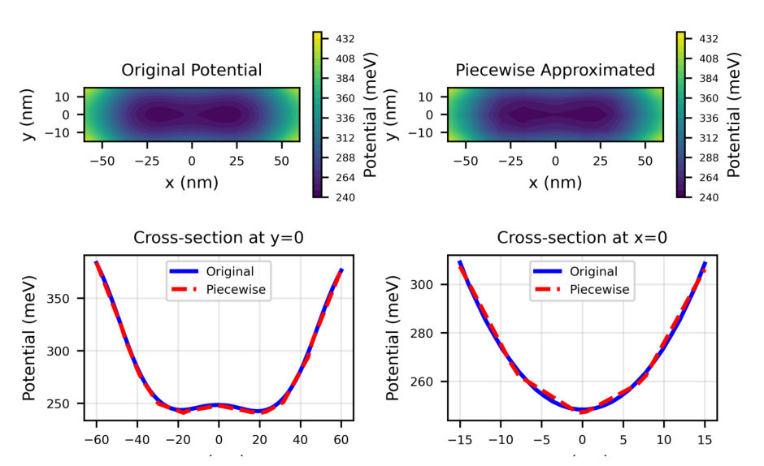
<figcaption class="paper-figure-caption"><b>Fig 4.</b> FIG. 4. Top: Contour plots of the original potential and its piecewise approximation. Bottom: Cross-sections of the potential and corresponding approximation taken at y = 0 and x = 0.</figcaption>
</figure>
</div>
<p><strong>Summary.</strong> The paper presents a quantum simulation framework to calculate the ground-state energy of multi-electron double quantum dots. By employing advanced techniques like Trotterization on a first-quantized grid representation, they estimate that these complex electronic structure problems are feasible within hours using early fault-tolerant quantum hardware. This work is crucial for advancing quantum technology design in solid-state physics.</p>
<p><strong>Why it may be interesting.</strong> This work directly addresses the computational bottleneck in simulating strongly correlated electron systems (like those in quantum dots) by providing concrete resource roadmaps for near-term quantum computation architectures.</p>
<details>
<summary>Detailed structure</summary>
<p><strong>Main problem.</strong> Accurately modeling the electronic structure of semiconductor nanostructures, particularly when dynamics involve more than two interacting electrons.</p>
<p><strong>Main result.</strong> The authors estimate that ground-state energies for 4 and 8 electrons can be calculated within hours to days using early fault-tolerant quantum computers with hundreds of thousands of physical qubits.</p>
<p><strong>Method.</strong> They developed a quantum simulation framework utilizing both Trotterization (Quantum Phase Estimation) and qubitisation algorithms applied to an efficiently scaling first-quantized representation of the system.</p>
<p><strong>Model / system.</strong> The focus is on double quantum dots (DQD) in semiconductor nanostructures, modeling multi-electron systems using a grid-based representation derived from the Hamiltonian components (Kinetic, DQD potential, Coulomb interaction).</p>
<p><strong>Key observables.</strong> Ground-state energy of the system; resource costs (qubit count, runtime) for achieving specific energy estimations.</p>
<p><strong>Important parameters / regimes.</strong> Physical noise rate ($10^{-3}$); number of electrons ($n_p=4, 8$); physical qubit counts ($\sim 226	ext{k}$ to $314	ext{k}$).</p>
<p><strong>Assumptions / limitations.</strong> The resource estimates are more realistic than theoretical error bounds because they incorporate insights from classical simulations; the analysis relies on specific quantum error correction codes (e.g., surface code).</p>
<p><strong>Figures summary.</strong> Figures illustrate circuit diagrams for one Trotter step and layout visualizations of logical qubits required for the simulation.</p>
<p><strong>Paper structure.</strong> The paper details the Hamiltonian decomposition, presents resource cost analyses comparing Trotterization vs. qubitisation, provides specific estimates for $n_p=4$ and $n_p=8$, and concludes on the feasibility using early fault-tolerant hardware.</p>
</details>
<details>
<summary>Abstract</summary>
<p>Semiconductor nanostructures are central to many developing technologies. Notably, double quantum dots are especially important for semiconductor spin-qubit architectures, quantum sensing applications, and quantum-dot solar cells. Accurate modelling is highly desirable but conventional methods can struggle when dynamics involve more than two interacting electrons. In this work, we present a quantum simulation framework capable of addressing multi-electron double quantum dots. We adopt an efficiently scaling 1$^\text{st}$ quantised representation of the system and develop algorithms based on both Trotterisation and qubitisation. Incorporating insights from classical simulations enables us to produce resource estimates that are more realistic than those obtained from theoretical error bounds. Using a standard surface code model with physical noise at $10^{-3}$, our results indicate that the ground-state energy of four electrons in a double quantum dot can be estimated in approximately 24 hours using 226k physical qubits, or an eight-electron system in 3.4 days with 314k qubits (with runtimes falling dramatically when more qubits are available). We anticipate that incorporating very recent advances including dense surface code architectures (Low et al. arXiv:2605.30455) may reduce these costs significantly further. We conclude that early fault tolerant computers may prove to be valuable tools for designing mature-era quantum technologies.</p>
</details>
<p><sub><a href="#top">↑ back to top</a></sub></p>

<p><a id="paper-2606.05777"></a></p>
<h3 id="periodic-symmetry-adapted-encoding-qubit-reduction-in-crystalline-electronic-structure"><a href="http://arxiv.org/abs/2606.05777v1">Periodic Symmetry-Adapted Encoding: Qubit Reduction in Crystalline Electronic Structure</a></h3>
<p><strong>Authors:</strong> Dario Picozzi<br>
<strong>Type:</strong> theory · <strong>Category:</strong> quantum information and computing · <strong>PDF:</strong> <a href="https://arxiv.org/pdf/2606.05777v1">https://arxiv.org/pdf/2606.05777v1</a><br>
<strong>Analysis basis:</strong> full PDF text, analyzed in chunks</p>
<div class="figure-strip-hint">↔ Scroll figures horizontally</div>
<div class="paper-figures-scroll">
<figure class="paper-figure-card">
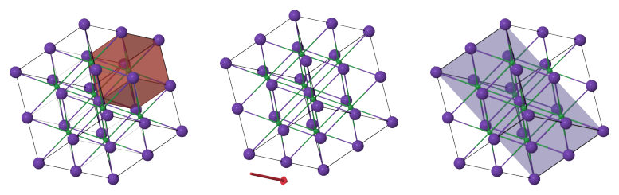
<figcaption class="paper-figure-caption"><b>Fig 1.</b> FIG. 1: Geometry of the CsCl B2 crystal in the (2, 2, 2) simple-cubic supercell, used as the largest-reduction example. Cs atoms are purple and Cl atoms green; bonds are drawn between nearest-neighbour Cs–Cl pairs and the supercell border is shown as a thin black frame. Left: the supercell decomposes into eight primitive cells, with one primitive cell highlighted by a translucent red volume. Centre: a half-supercell translation along a primitive lattice vector maps each atom onto an equivalent atom modulo the supercell period. In CsCl all three Cartesian half translations are retained as independent Z2 generators. Right: a representative oblique mirror plane of the Pm3m space group....</figcaption>
</figure>
<figure class="paper-figure-card">
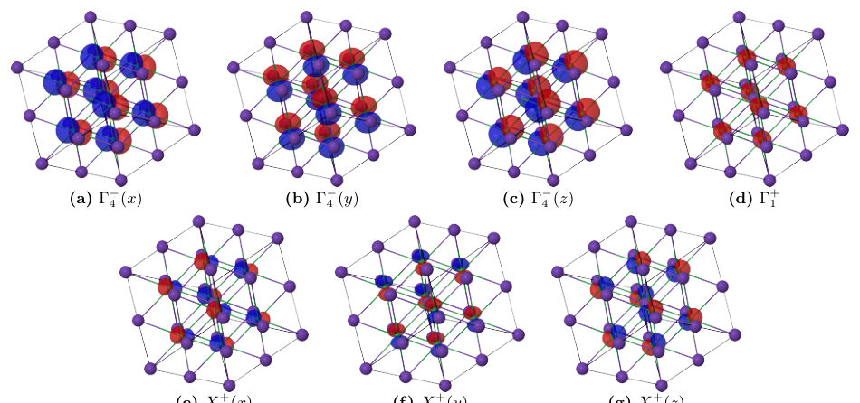
<figcaption class="paper-figure-caption"><b>Fig 2.</b> FIG. 2: CsCl CAS(6,7) active space used for the largest-reduction example. The CAS(6,7) active window contains the three occupied frontier orbitals transforming as the Γ− 4 triplet, followed by four virtual orbitals: the Γ+ 1 state and the three symmetry-equivalent X+ 1 star partners. The labels in parentheses on the Γ− 4 panels denote the Cartesian component selected by the mirror eigenvalues; the labels on the X+ 1 panels denote the star arm with translation eigenvalue −1 along the corresponding primitive lattice direction. All orbitals are rendered on the same CsCl supercell view as Fig. 1. Red and blue isosurfaces denote opposite signs of the orbital amplitude.</figcaption>
</figure>
<figure class="paper-figure-card">
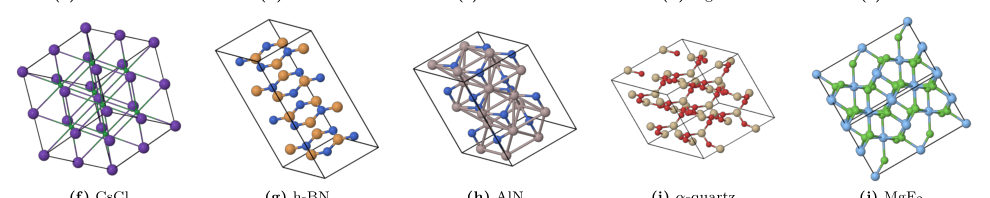
<figcaption class="paper-figure-caption"><b>Fig 3.</b> FIG. 3: The ten periodic benchmark systems, shown as the (2, 2, 2) supercells used in the calculations. The set spans cubic, hexagonal, trigonal, and tetragonal examples and is ordered to match the columns of Table I.</figcaption>
</figure>
<figure class="paper-figure-card">
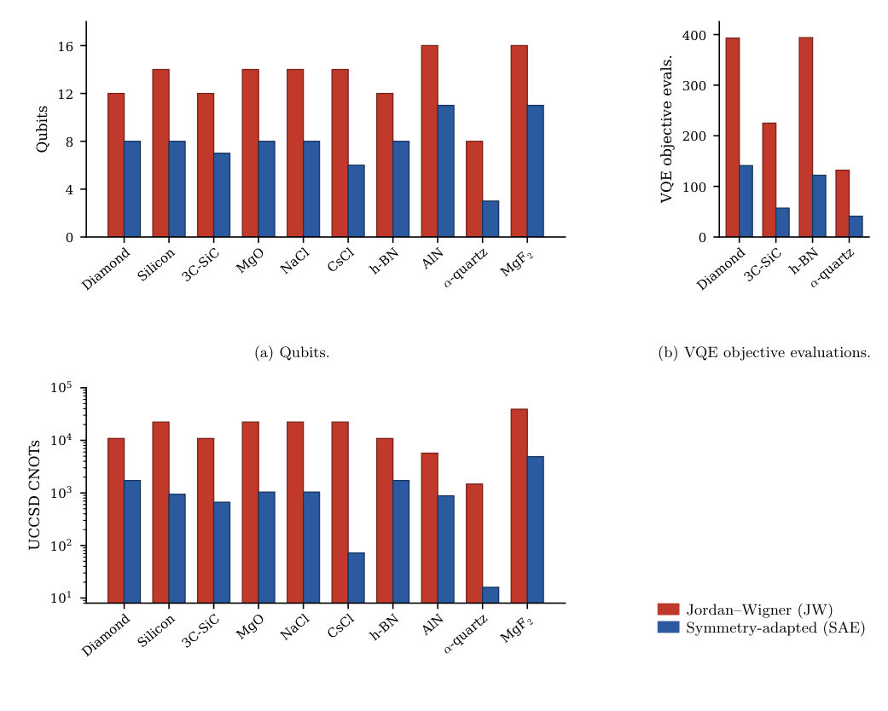
<figcaption class="paper-figure-caption"><b>Fig 4.</b> FIG. 4: Resource reduction across the ten benchmark systems. (a) Every system drops four to eight qubits, with CsCl reducing the register from 14 to 6 qubits. (b) For the four systems where both JW- and SAE-VQE were fully optimised, SAE converges in 2.8–3.9× fewer VQE objective evaluations. (c) SAE removes one to three orders of magnitude of two-qubit gates; CsCl and α-quartz show the largest CNOT compressions (309× and 92×, respectively). Numerical values match Table I.</figcaption>
</figure>
</div>
<p><strong>Summary.</strong> The paper introduces Periodic Symmetry-Adapted Encoding (SAE) to drastically reduce the qubit count needed for simulating crystalline electronic structures on quantum computers. By incorporating crystal translation symmetries into the symmetry constraints, it achieves substantial resource savings—up to 309x in CNOT gates—while maintaining high energy accuracy compared to standard encodings.</p>
<p><strong>Why it may be interesting.</strong> This work provides a concrete, scalable method to reduce the exponential scaling of quantum resources required for solid-state physics simulations by systematically exploiting crystal symmetries, which is crucial for applying quantum computing to materials science.</p>
<details>
<summary>Detailed structure</summary>
<p><strong>Main problem.</strong> The primary goal is to enable qubit-efficient quantum simulation of crystalline materials by adapting symmetry reduction techniques from molecular systems to periodic electronic structures.</p>
<p><strong>Main result.</strong> The proposed Periodic Symmetry-Adapted Encoding (SAE) successfully reduces the required number of qubits and computational resources (CNOT counts, VQE evaluations) significantly compared to standard Jordan-Wigner encodings across ten benchmark crystals.</p>
<p><strong>Method.</strong> The method extends Symmetry-Adapted Encoding by incorporating crystal translation symmetries alongside point-group and spin-parity generators. These symmetries are used to constrain the Hamiltonian via Boolean linear equations, projecting the system onto a smaller, symmetry-adapted qubit subspace.</p>
<p><strong>Model / system.</strong> The model involves simulating the electronic structure of various crystalline materials (e.g., diamond, CsCl) using an active space derived from a supercell Hamiltonian constructed by folding $k$-point calculations to the $\Gamma$-point. The simulation is mapped onto qubits via the Jordan-Wigner transformation.</p>
<p><strong>Key observables.</strong> Qubit count reduction (e.g., 14 to 6 for CsCl), CNOT gate counts, variational parameter counts, and preservation of target energies below chemical accuracy.</p>
<p><strong>Important parameters / regimes.</strong> The number of independent Boolean generators ($n_g$), the size of the active space (CAS(6,7)), and the specific crystal structure symmetries ($\mathbb{Z}_2^8$ for CsCl).</p>
<p><strong>Assumptions / limitations.</strong> The method assumes that the physical sector remains the global minimum when projected onto the symmetry-adapted subspace, and that all relevant symmetry generators can be identified and commute.</p>
<p><strong>Figures summary.</strong> Figures illustrate resource savings: Qubit count drop (e.g., CsCl 14 $ o$ 6), reduction in VQE objective evaluations ($\approx 3	imes$ fewer), and significant CNOT gate compression, demonstrating the efficiency of periodic SAE.</p>
<p><strong>Paper structure.</strong> The paper introduces the problem by extending molecular SAE to periodic systems. It details the Hamiltonian construction via supercells and symmetry identification (spin-parity, point-group, translation). Results are presented through benchmarking on ten crystals, comparing resource costs against JW encoding, and validating energy preservation using UCCSD-VQE benchmarks.</p>
</details>
<details>
<summary>Abstract</summary>
<p>We extend the symmetry-adapted encoding (SAE) framework to periodic electronic structure, enabling qubit-efficient quantum simulation of crystalline materials. By constructing a $Γ$-point supercell Hamiltonian from a folded $k$-point calculation and systematically identifying all applicable space-group symmetry generators -- including spin-parity, point-group, and crystal translation symmetries -- we obtain qubit Hamiltonians with fewer qubits than the Jordan--Wigner starting point. We benchmark diamond, silicon, 3C-SiC, MgO, NaCl, CsCl, h-BN, wurtzite AlN, $α$-quartz SiO$_2$, and MgF$_2$ using active spaces chosen to preserve complete near-degenerate frontier manifolds across cubic, hexagonal, trigonal, and tetragonal space groups. Across the suite the periodic SAE removes 4--8 qubits. The B2 CsCl benchmark realises eight independent Boolean generators, i.e. a symmetry group isomorphic to $\mathbb{Z}_2^8$, reducing CAS(6,7) from 14 to 6 qubits. This exceeds the $\mathbb{Z}_2^5$ maximum of molecular SAE, where only two spin parities and at most three independent Boolean point-group generators are available, because the folded crystal supplies three additional half-translation symmetries. Noiseless UCCSD-VQE benchmarks against exact diagonalisation in the active-space sector show that the reduced encodings preserve the target energies to well below chemical accuracy while reducing variational parameter counts by $3$--$8\times$ and CNOT counts by up to $309\times$. The largest circuit savings occur when translation and point-group generators act independently in the active space, demonstrating that periodic symmetry can be converted directly into both qubit and ansatz compression. The method is implemented in the open-source QuantumSymmetry package and requires no manual specification of symmetry generators.</p>
</details>
<p><sub><a href="#top">↑ back to top</a></sub></p>

<p><a id="paper-2606.06287"></a></p>
<h3 id="quantum-algorithms-for-triangle-cut-sparsification"><a href="http://arxiv.org/abs/2606.06287v1">Quantum Algorithms for Triangle Cut Sparsification</a></h3>
<p><strong>Authors:</strong> Shan Jiang, Pan Peng<br>
<strong>Type:</strong> theory · <strong>Category:</strong> quantum information and computing · <strong>PDF:</strong> <a href="https://arxiv.org/pdf/2606.06287v1">https://arxiv.org/pdf/2606.06287v1</a><br>
<strong>Analysis basis:</strong> full PDF text, analyzed in chunks</p>
<div class="figure-strip-hint">↔ Scroll figures horizontally</div>
<div class="paper-figures-scroll">
<figure class="paper-figure-card">
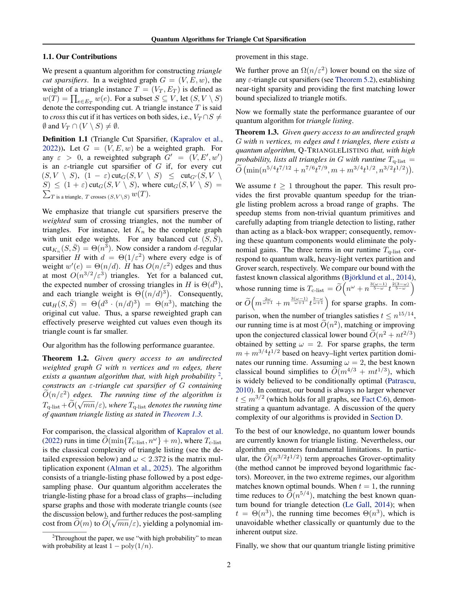
<figcaption class="paper-figure-caption"><b>Fig 1.</b> Low-resolution page preview, page 2</figcaption>
</figure>
<figure class="paper-figure-card">
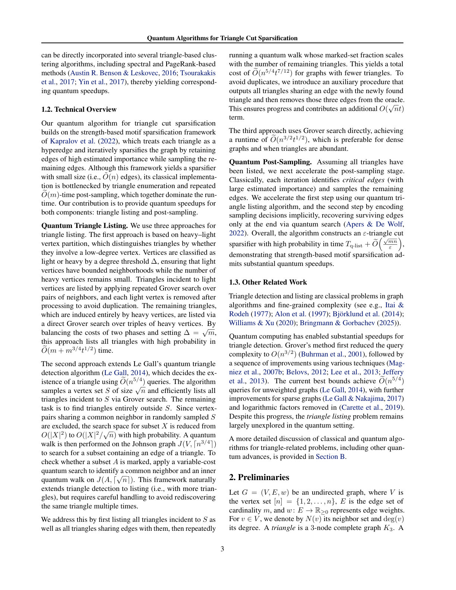
<figcaption class="paper-figure-caption"><b>Fig 2.</b> Low-resolution page preview, page 3</figcaption>
</figure>
<figure class="paper-figure-card">
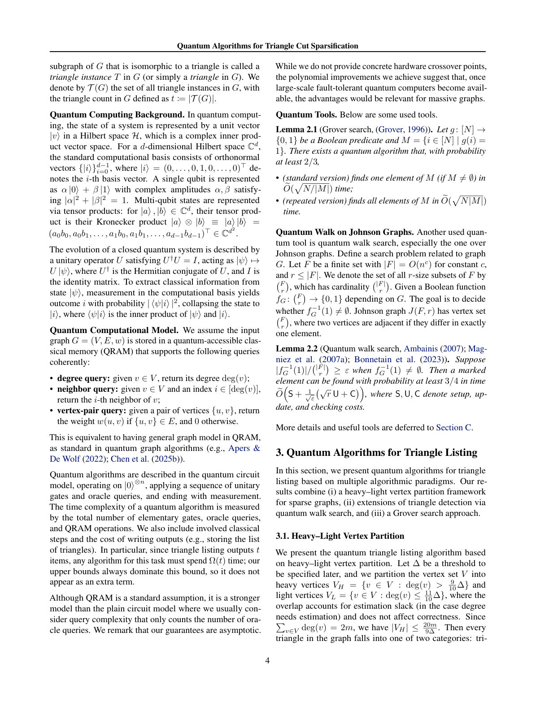
<figcaption class="paper-figure-caption"><b>Fig 3.</b> Low-resolution page preview, page 4</figcaption>
</figure>
<figure class="paper-figure-card">
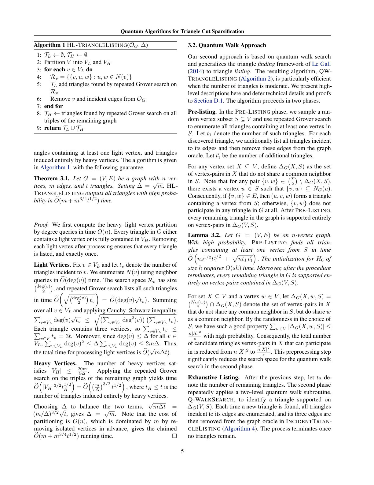
<figcaption class="paper-figure-caption"><b>Fig 4.</b> Low-resolution page preview, page 5</figcaption>
</figure>
<figure class="paper-figure-card">
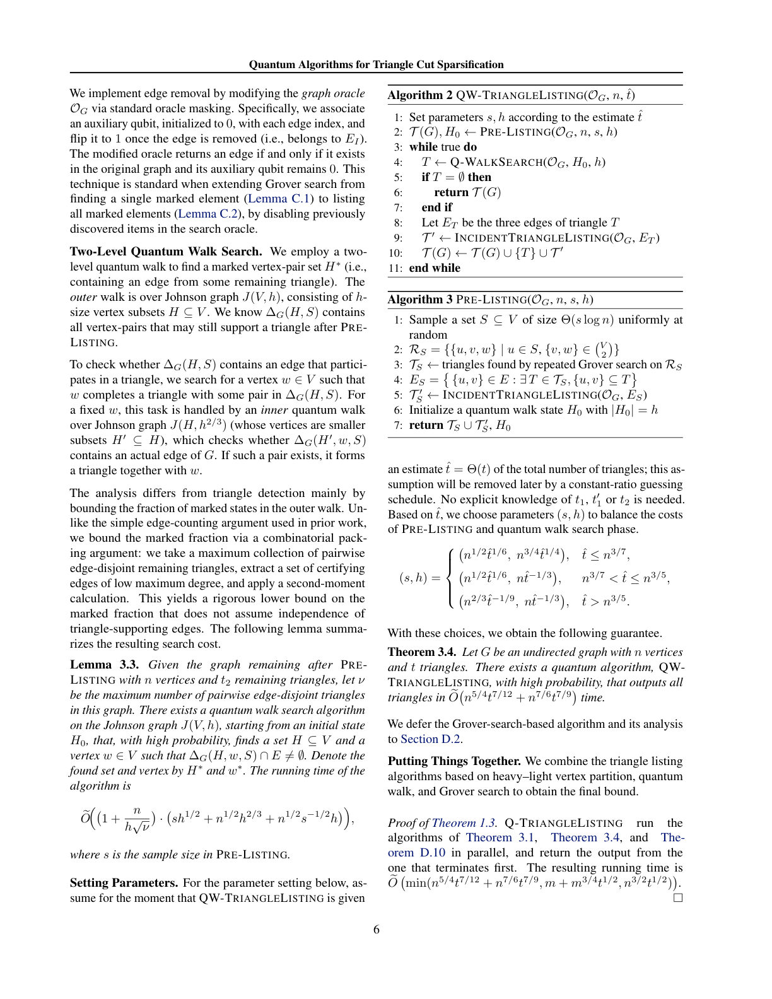
<figcaption class="paper-figure-caption"><b>Fig 5.</b> Low-resolution page preview, page 6</figcaption>
</figure>
</div>
<p><strong>Summary.</strong> This paper develops quantum algorithms for triangle cut sparsification, a method to compress graph representations while maintaining structural information related to triangles. It achieves significant theoretical speedups by first presenting an efficient quantum algorithm for listing all triangles and then using this primitive to construct the required $\epsilon$-sparsifier with near-optimal size bounds.</p>
<p><strong>Why it may be interesting.</strong> While focused on graph theory/algorithms, the development of novel quantum primitives like Q-TRIANGLELISTING demonstrates advanced applications of quantum search (Grover) and quantum walks to complex combinatorial structures, which has parallels in simulating quantum many-body systems or analyzing network properties.</p>
<details>
<summary>Detailed structure</summary>
<p><strong>Main problem.</strong> The core problem is developing quantum algorithms for triangle cut sparsification, which aims to reduce graph size while preserving approximate triangle counts across all cuts.</p>
<p><strong>Main result.</strong> The authors present a quantum algorithm that constructs an $\epsilon$-triangle cut sparsifier of size $   ilde{O}(n/\epsilon^2)$ in time $eO(T_{q	ext{-list}} + \sqrt{mn}/\epsilon)$, establishing near-tight sparsity bounds.</p>
<p><strong>Method.</strong> The approach combines advanced techniques: quantum triangle listing (using heavy-light partitioning, quantum walks, or Grover search) with a strength-based sampling procedure to construct the sparsifier iteratively.</p>
<p><strong>Model / system.</strong> The system is an undirected weighted graph $G = (V, E, w)$. The analysis focuses on preserving the 'triangle cut' measure across cuts $(S, V \setminus S)$ by constructing a reweighted subgraph $G'$.</p>
<p><strong>Key observables.</strong> Triangle counts crossing a cut, $\epsilon$-cut preservation factor, and the size of the resulting sparsifier $|E'|$.</p>
<p><strong>Important parameters / regimes.</strong> $n$ (vertices), $m$ (edges), $t$ (triangles), $\epsilon$ (approximation factor).</p>
<p><strong>Assumptions / limitations.</strong> The analysis assumes access to Quantum RAM (QRAM) and relies on the efficiency of quantum primitives like Q-TRIANGLELISTING.</p>
<p><strong>Figures summary.</strong> Not specified in the notes, but the structure implies comparisons between classical/quantum time complexities for listing triangles and constructing sparsifiers.</p>
<p><strong>Paper structure.</strong> The paper builds sequentially: first establishing a quantum algorithm for triangle listing ($T_{q	ext{-list}}$) using multiple techniques (heavy-light, quantum walks); second, applying this to the strength-based motif cut sparsification framework; and finally proving lower bounds on the required size of such sparsifiers.</p>
</details>
<details>
<summary>Abstract</summary>
<p>Triangles capture higher-order structures in graphs and are fundamental to applications such as clustering and network analysis.   To enable efficient use of such structures at scale, we study the problem of \emph{triangle cut sparsification}, which aims to reduce the graph size while approximately preserving triangle counts across every cut.   We investigate \emph{quantum algorithms} for this problem, using triangle listing as our main technical ingredient.   In particular, we present a quantum algorithm for triangle listing that, for a graph with $n$ vertices, $m$ edges, and $t$ triangles, runs in time $T_{\mathrm{q\text{-}list}} =$ $\widetilde{O}\bigl(\min(n^{5/4}t^{7/12} + n^{7/6}t^{7/9}, m + m^{3/4}t^{1/2},$ $n^{3/2}t^{1/2})\bigr)$, improving upon the best known classical bounds over a broad range of parameters. Our algorithm is based on a heavy-light vertex partition and an extension of triangle detection via quantum walks and Grover search.   Leveraging this result, we design a quantum algorithm for constructing $\varepsilon$-triangle cut sparsifiers of size $\widetilde{O}(n/\varepsilon^2)$ in time $\widetilde{O}(T_{\mathrm{q\text{-}list}} + \sqrt{mn}/\varepsilon)$.   Finally, we demonstrate applications to clustering algorithms based on triangle-related measures   and prove a lower bound of $Ω(n/\varepsilon^2)$ on the size of any $\varepsilon$-triangle cut sparsifiers.</p>
</details>
<p><sub><a href="#top">↑ back to top</a></sub></p>

<p><a id="paper-2606.06015"></a></p>
<h3 id="quantum-computing-for-accurate-large-scale-electronic-structure-calculations-dft-embedded-post-processed-quantum-selected-configuration-interaction"><a href="http://arxiv.org/abs/2606.06015v1">Quantum computing for accurate large-scale electronic-structure calculations: DFT-embedded, post-processed quantum-selected configuration interaction</a></h3>
<p><strong>Authors:</strong> Tuan Minh Do, Yuichiro Yoshida, Tomoya Shiota, Wataru Mizukami<br>
<strong>Type:</strong> theory · <strong>Category:</strong> strongly correlated electrons · <strong>PDF:</strong> <a href="https://arxiv.org/pdf/2606.06015v1">https://arxiv.org/pdf/2606.06015v1</a><br>
<strong>Analysis basis:</strong> full PDF text, analyzed in chunks</p>
<div class="figure-strip-hint">↔ Scroll figures horizontally</div>
<div class="paper-figures-scroll">
<figure class="paper-figure-card">
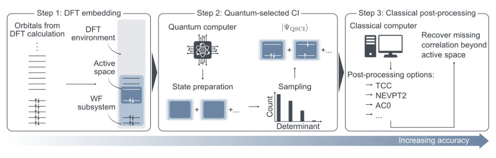
<figcaption class="paper-figure-caption"><b>Fig 1.</b> FIG. 1. Overview of the multilevel framework combining DFT embedding, quantum computing, and classical post-processing. Step 1: Projection-based WF-in-DFT embedding partitions the molecular orbitals of the full system into a WF subsystem (light blue) and a DFT environment (gray). Step 2: An active space is selected from the WF subsystem (dark blue), and a targeted active-space quantum state is prepared on a quantum computer and sampled in the computational basis. The QSCI method is then used to approximately reconstruct the quantum state on a classical computer by diagonalizing the Hamiltonian within the determinant subspace defined using the sampled bitstrings. Step 3: Missing electron...</figcaption>
</figure>
<figure class="paper-figure-card">
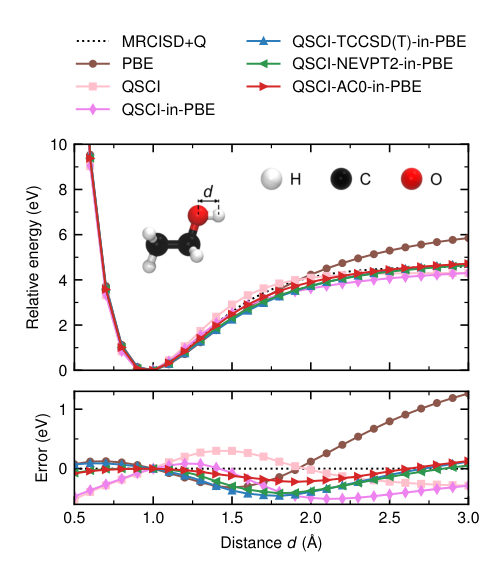
<figcaption class="paper-figure-caption"><b>Fig 2.</b> FIG. 2. O–H bond dissociation in ethanol. Relative potential en- ergy curves (top) for O–H bond dissociation in ethanol using the cc- pVDZ basis set. Corresponding errors (bottom) are defined as devi- ations from the MRCISD+Q reference. QSCI calculations used an active space of (2e,2o).</figcaption>
</figure>
<figure class="paper-figure-card">
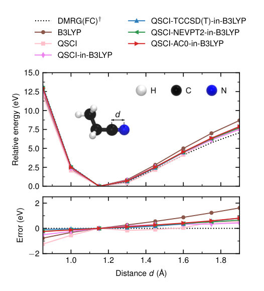
<figcaption class="paper-figure-caption"><b>Fig 3.</b> FIG. 3. C≡N triple-bond stretching in propionitrile. Relative po- tential energy curves (top) for C≡N triple-bond stretching in propi- onitrile using the cc-pVDZ basis set. Corresponding errors (bottom) are defined as deviations from the DMRG(FC) reference. QSCI cal- culations used an active space of (6e,6o). †Values are taken from Ref. [65].</figcaption>
</figure>
<figure class="paper-figure-card">
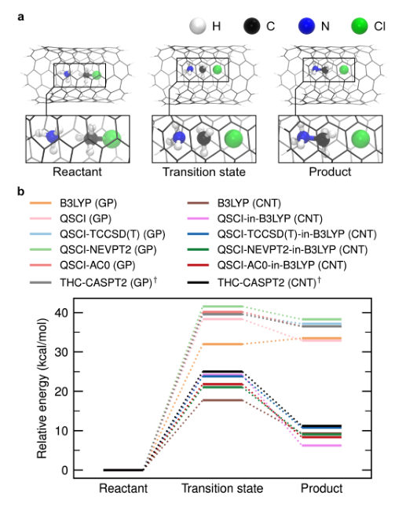
<figcaption class="paper-figure-caption"><b>Fig 4.</b> FIG. 4. Results for the Menshutkin SN2 reaction in gas phase (GP) and inside a carbon nanotube (CNT). (a) Illustration of the reactant, transition state, and product geometries of the Menshutkin SN2 reaction inside a CNT. (b) Energy profiles along the reaction path relative to the reactant energy computed with the 6-31G* basis set. QSCI calculations used an active space of (4e,4o). †Values are taken from Refs. [66, 75].</figcaption>
</figure>
<figure class="paper-figure-card">
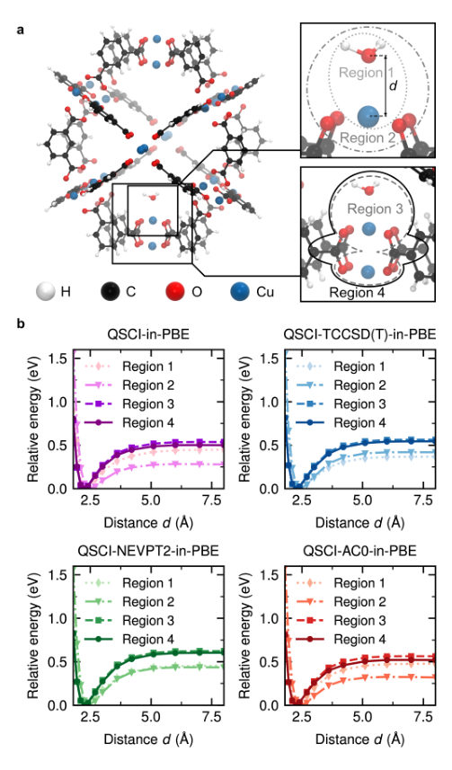
<figcaption class="paper-figure-caption"><b>Fig 5.</b> FIG. 5. Results for water adsorption on an HKUST-1 MOF clus- ter model. (a) Illustration of the HKUST-1 cluster model with a single water molecule adsorbed on a Cu site. Four different defini- tions for the active WF subsystem (Regions 1–4) were investigated. (b) Relative energy profiles along the reaction path computed with the SVP basis set. QSCI calculations used an active space of (2e,2o).</figcaption>
</figure>
</div>
<p><strong>Summary.</strong> The paper introduces a novel, scalable quantum-classical hybrid method for electronic structure calculations by embedding an active space treated via Quantum-Selected Configuration Interaction (QSCI) within a DFT environment. By systematically post-processing the QSCI results with high-level correlation theories, the authors achieve quantitative accuracy on complex chemical reactions and adsorption processes using superconducting quantum hardware.</p>
<p><strong>Why it may be interesting.</strong> This work directly addresses the computational bottleneck in quantum chemistry—scaling high-accuracy correlation methods to large systems—by proposing a hybrid quantum-classical architecture relevant to simulating molecular dynamics or catalysis on near-term quantum hardware.</p>
<details>
<summary>Detailed structure</summary>
<p><strong>Main problem.</strong> Developing an accurate, scalable method for electronic structure calculations on quantum computers that can handle large chemical systems by combining multiple computational approaches.</p>
<p><strong>Main result.</strong> The framework successfully achieved quantitative agreement ($\sim 1 	ext{ kcal/mol}$) with classical references for a Menshutkin $  ext{SN}2$ reaction inside a carbon nanotube using limited qubits on a superconducting quantum computer.</p>
<p><strong>Method.</strong> A multilevel embedding framework combining Density Functional Theory (DFT) for the environment, Quantum-Selected Configuration Interaction (QSCI) on an active space, and classical post-processing methods like TCCSD(T) or NEVPT2 to recover correlation energy.</p>
<p><strong>Model / system.</strong> The method is applied to diverse chemical systems including organic molecules, metal-organic frameworks (MOFs), metallic clusters, and reactions confined within nanotubes. The core involves partitioning the system into an active quantum subsystem ($   ext{A}$) embedded in a DFT environment ($   ext{B}$).</p>
<p><strong>Key observables.</strong> Bond dissociation energies, adsorption energies, reaction barriers, and potential energy curves.</p>
<p><strong>Important parameters / regimes.</strong> The calculation utilizes subsets of qubits on a 144-qubit superconducting quantum computer; accuracy is benchmarked against $\sim 1 	ext{ kcal/mol}$ error tolerance.</p>
<p><strong>Assumptions / limitations.</strong> The approach relies on the validity of projection-based embedding (WF-in-DFT) and assumes that post-processing methods can accurately recover correlation beyond the active space approximation.</p>
<p><strong>Figures summary.</strong> Figures illustrate the workflow: Step 1 shows DFT embedding, Step 2 details QSCI on a quantum computer, and Step 3 applies classical post-processing. Specific examples show potential energy curves for $ ext{C}\equiv    ext{N}$ stretching and reaction profiles for the Menshutkin reaction.</p>
<p><strong>Paper structure.</strong> The paper introduces the multilevel embedding framework (WF-in-DFT + QSCI + Post-processing). It details the theoretical underpinnings of each component, presents benchmark calculations on various systems (e.g., propionitrile, CNT), and concludes by demonstrating quantitative accuracy for complex chemical processes.</p>
</details>
<details>
<summary>Abstract</summary>
<p>We present a multilevel embedding framework for quantum chemistry calculations on a quantum computer. In our framework, a quantum algorithm treats the strongly correlated active space, while a high-level wave-function method such as coupled cluster theory or multireference perturbation theory recovers the remaining correlation in the surrounding region. A sampling-based quantum algorithm, quantum-selected configuration interaction, bridges the quantum and classical treatments. The entire calculation is embedded in a low-cost density functional theory description of the surrounding environment using Manby's projection technique. We apply the framework to organic, metal-organic, and metallic systems, computing bond dissociation energies, adsorption energies, and reaction barriers using only the subset of qubits of a 144-qubit superconducting quantum computer at the University of Osaka and achieving $\sim$1 kcal/mol agreement with classical references for a Menshutkin $\mathrm{S_N2}$ reaction inside a carbon nanotube. Our results may open the way to quantitatively reliable quantum-classical hybrid calculations for large-scale chemical systems.</p>
</details>
<p><sub><a href="#top">↑ back to top</a></sub></p>

<p><a id="paper-2606.06456"></a></p>
<h3 id="quantum-element-wise-transforms"><a href="http://arxiv.org/abs/2606.06456v1">Quantum element-wise transforms</a></h3>
<p><strong>Authors:</strong> Zane M. Rossi, Rahul Sarkar<br>
<strong>Type:</strong> theory · <strong>Category:</strong> quantum information and computing · <strong>PDF:</strong> <a href="https://arxiv.org/pdf/2606.06456v1">https://arxiv.org/pdf/2606.06456v1</a><br>
<strong>Analysis basis:</strong> full PDF text, analyzed in chunks</p>
<div class="figure-strip-hint">↔ Scroll figures horizontally</div>
<div class="paper-figures-scroll">
<figure class="paper-figure-card">
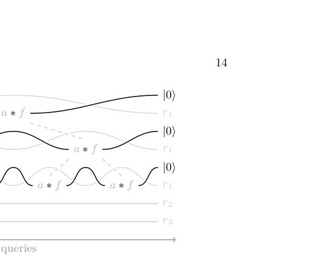
<figcaption class="paper-figure-caption"><b>Fig 1.</b> FIG. 2. Simplified depiction of a specific instance of the weaving lemma (Lem. II.2). Here (∗) is a quantum process that catalytically uses copies of |0⟩(possibly on many qubits) in a register r0 by swapping the contents of r0 with this process’ r1 register (i.e., a blocked operator, Def. II.8). The use by (∗) of the contents of r0 is indicated by an allocation (a) followed by a freeing (f). If this process itself can sequentially call copies of (∗), then the total required copies of register r0, here denoted by r′ 0, r′′ 0 , . . . , grows with the depth of the tree induced by recursive function calls (seen by the re-use of r0 across protocols at the same depth).</figcaption>
</figure>
<figure class="paper-figure-card">
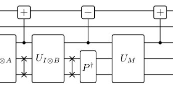
<figcaption class="paper-figure-caption"><b>Fig 2.</b> FIG. 3. Depiction of the circuit for clean element-wise products of block encodings, i.e., block encodings of Ir1 ⊗(A ◦B)r3 using auxiliary space r4r2. Note if r4r2 is in the all-zeros state, then the state |0n⟩in r0 is necessarily used catalytically. Here the (+) notation indicates projection- controlled addition with target register r4 used for the compression gadget (see Lem. A.1); when r2 is not a single qubit, this is a Π-controlled addition on r4 for Π a projector with form (I−|0⟩⟨0|r2). Note also the non-standard ordering of registers to make depiction easier. In our recursive construction, each U(I⊗∗) is replaced by an analogous circuit which acquires (1) a new copy of r0 for each...</figcaption>
</figure>
<figure class="paper-figure-card">
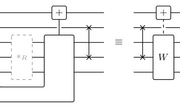
<figcaption class="paper-figure-caption"><b>Fig 3.</b> FIG. 4. Two equivalent, simplified depictions of the circuit in Fig. 3. On the left the unitary-valued function W takes two unitary-valued inputs, here denoted (∗L) and (∗R), which in our setting will both be block encoding unitaries of matrices that have the form (I ⊗M) for some square matrix M. This unitary-valued function (i.e., a circuit with holes) is further condensed on the right, where the free arguments (or holes) are suppressed. Note that wires with slashes represent multi-qubit registers, between which swap gates denote qubit-wise swaps. Additionally, the projection controlled addition operators (see Lem. A.1), here with their targets denoted with (+), have their controls...</figcaption>
</figure>
<figure class="paper-figure-card">
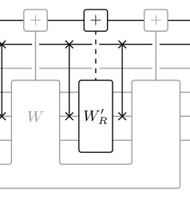
<figcaption class="paper-figure-caption"><b>Fig 4.</b> FIG. 5. A depiction of the first level of the recursive use of the circuit form of Fig. 3 by itself, making use of both forms of the condensed notation introduced in Fig. 4. Note here that the register used for the compression gadget, r4, is not duplicated, and remains the target for the addition gadgets of protocols deeper in the recursive construction. A new register of size n, namely r′ 0, is however initialized to |0⟩, with a new copy introduced at each level of recursion, though re-used between subroutines at the same level, given the catalytic behavior of the original circuit. This catalysis succeeds under the assumption that all block encodings are successfully applied (equivalently,...</figcaption>
</figure>
<figure class="paper-figure-card">
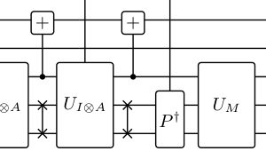
<figcaption class="paper-figure-caption"><b>Fig 5.</b> FIG. 9. The quantum circuit to apply, controlled on the single-qubit register r5, either A = A◦1 or (A◦A) = A◦2 to the register r1r3 (assuming successful post-selection of r0r2r4 in the all-zeros state). Note that if the permutations were not controlled that this would apply either (A ◦I) or (A ◦A) for r5 = |0⟩, |1⟩respectively, which is equivalent iff A is diagonal. In the controlled version of our recursive construction these controlled permutations, at each level, would become multi-controlled permutations applied only when not all of the inputs A, B are the identity matrix.</figcaption>
</figure>
</div>
<p><strong>Summary.</strong> This paper develops advanced quantum algorithms to efficiently compute element-wise transforms of matrices encoded within unitaries. By introducing optimized circuit techniques and analyzing resource scaling, it significantly reduces the required auxiliary space compared to previous methods. This advances the practical feasibility of applying complex mathematical functions to quantum simulation problems.</p>
<p><strong>Why it may be interesting.</strong> This work provides concrete algorithmic blueprints for implementing complex mathematical operations (like element-wise functions) on quantum hardware using the block encoding paradigm, which is crucial for simulating physical systems or running ML algorithms in a quantum context.</p>
<details>
<summary>Detailed structure</summary>
<p><strong>Main problem.</strong> The authors aim to construct improved, resource-efficient quantum algorithms for performing element-wise transforms (QEWTs) on matrices block-encoded within unitary processes.</p>
<p><strong>Main result.</strong> They achieve significant improvements in auxiliary space complexity for QEWTs compared to prior work, particularly by developing techniques like the 'weaving lemma' and utilizing controlled unitaries.</p>
<p><strong>Method.</strong> The methods involve constructing quantum circuits that manipulate block encodings of operators, drawing heavily on concepts from Quantum Singular Value Transformation (QSVT) and specialized subroutines like swap-copy gates.</p>
<p><strong>Model / system.</strong> The work operates within the framework of quantum computation using 'block encoding,' where an $n$-qubit operator is represented as a sub-block of a larger unitary matrix. The focus is on manipulating these encodings to realize element-wise functions ($f \circ M$).</p>
<p><strong>Key observables.</strong> Resource complexity metrics including query complexity, auxiliary space usage (e.g., scaling as $O(a + n \log d)$), and gate/depth complexity.</p>
<p><strong>Important parameters / regimes.</strong> Polynomial degree ($d$), block encoding parameters $(\alpha, a, \epsilon)$, and the structure of the target function $f$.</p>
<p><strong>Assumptions / limitations.</strong> The analysis relies on various sufficient assumptions to manage worst-case behavior when multiplying ill-conditioned block encodings, and assumes access to specific controlled unitary operations.</p>
<p><strong>Figures summary.</strong> Figures illustrate circuit constructions for key subroutines, such as the swap-copy operation (Figure 1) and the general structure of compression gadgets used for matrix products (Figure 8).</p>
<p><strong>Paper structure.</strong> The paper builds from foundational concepts like block encoding definitions and error propagation rules to develop specific circuits. It progresses through techniques for element-wise products, controlled powers, and finally presents optimized constructions achieving low space complexity.</p>
</details>
<details>
<summary>Abstract</summary>
<p>Quantum algorithms for basic numerical linear algebraic tasks have proven essential for translating diverse problems to a unified quantum computational context. Many of these tasks -- e.g., applying a polynomial function to the spectrum of a matrix embedded in a unitary process (a so-called block encoding), or taking linear combinations of block encodings -- are well-addressed by techniques like quantum singular value transformation (QSVT) or linear combination of unitaries (LCU). However, there exist useful matrix transforms whose realization by existing quantum algorithms is unclear or inefficient. In this work we construct improved quantum algorithms for some of these transforms, the simplest of which is a polynomial function applied element-wise. We show the space required to compute quantum element-wise transforms can be reduced exponentially in the degree of the applied function compared to prior work, and raise and rectify errors in previous constructions. We present our algorithms alongside applications to machine learning, simulation, and signal processing.</p>
</details>
<p><sub><a href="#top">↑ back to top</a></sub></p>

<p><a id="paper-2606.06316"></a></p>
<h3 id="quantum-enhanced-rare-event-discovery-and-sampling"><a href="http://arxiv.org/abs/2606.06316v1">Quantum enhanced rare event discovery and sampling</a></h3>
<p><strong>Authors:</strong> Naixu Guo, Po-Wei Huang, Qisheng Wang, Jayne Thompson, Patrick Rebentrost, Mile Gu, Chengran Yang<br>
<strong>Type:</strong> theory · <strong>Category:</strong> quantum information and computing · <strong>PDF:</strong> <a href="https://arxiv.org/pdf/2606.06316v1">https://arxiv.org/pdf/2606.06316v1</a><br>
<strong>Analysis basis:</strong> full PDF text, analyzed in chunks</p>
<div class="figure-strip-hint">↔ Scroll figures horizontally</div>
<div class="paper-figures-scroll">
<figure class="paper-figure-card">
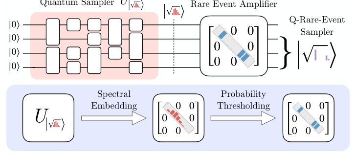
<figcaption class="paper-figure-caption"><b>Fig 1.</b> FIG. 1. Overview of quantum rare event sampling. Top: Starting from the initial sample state |P⟩, the rare-event amplifier filters basis states with P(xi) ≤∆and amplifies the surviving subspace to prepare the target state |PR⟩. Bottom: The amplifier is implemented by first converting amplitudes into a spectral representation (spectral embedding), and then applying an approximate threshold at √</figcaption>
</figure>
<figure class="paper-figure-card">
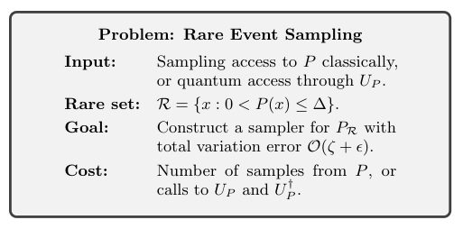
<figcaption class="paper-figure-caption"><b>Fig 2.</b> FIG. 2. Problem setting of rare event sampling. The task is to sample from the conditional distribution over events whose probabilities are at most ∆. The error term ζ captures the unavoidable ambiguity from near-threshold events.</figcaption>
</figure>
<figure class="paper-figure-card">
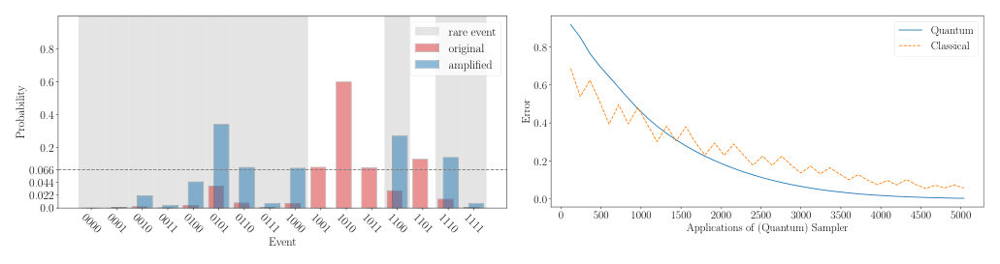
<figcaption class="paper-figure-caption"><b>Fig 3.</b> FIG. 3. Simulation results for a Dyson-Ising chain. Left: Original (red) versus amplified (blue) probabilities for a sequence of length L = 4. The dashed horizontal line represents the probability threshold ∆, and the shaded regions denote the target rare events. Right: Total variation distance (TVD) error versus the number of applications of the quantum sampler for a sequence of length L = 8 and Markov order χ = 3. The quantum algorithm converges more smoothly and rapidly than the classical baseline, which exhibits oscillatory behavior due to the intermittent sampling of rare events.</figcaption>
</figure>
</div>
<p><strong>Summary.</strong> The paper presents a novel quantum algorithm designed to efficiently sample extremely rare events from complex probability distributions without knowing which events are rare beforehand. By utilizing amplitude amplification and spectral techniques on the underlying quantum sampler, it achieves a quadratic speedup over classical sampling methods in several important physical regimes. This advances the field of quantum simulation for low-probability phenomena.</p>
<p><strong>Why it may be interesting.</strong> This work directly addresses fundamental limitations in sampling theory by providing a concrete quantum advantage for tasks that are classically intractable or require prohibitively large resources, which is central to quantum algorithm design.</p>
<details>
<summary>Detailed structure</summary>
<p><strong>Main problem.</strong> The core problem is efficiently discovering and sampling rare events—those occurring with extremely low probability ($\le \Delta$)—from a complex underlying probability distribution $P$, especially when the set of rare events is unknown beforehand.</p>
<p><strong>Main result.</strong> The authors introduce a quantum algorithm that achieves an optimal quadratic speedup over classical methods for this task, scaling as $O(1/\sqrt{p_{	ext{rare}}\Delta})$ queries to the underlying quantum sampler.</p>
<p><strong>Method.</strong> The method involves constructing a quantum circuit using amplitude amplification and polynomial approximations (via Quantum Signal Processing) to implement a probability thresholding function directly on the quantum state without prior knowledge of rare event locations.</p>
<p><strong>Model / system.</strong> The analysis is applied to general probability distributions $P$ over $N$ events, including specific models like heavy-tailed power laws and stationary stochastic processes governed by the Asymptotic Equipartition Property (AEP).</p>
<p><strong>Key observables.</strong> Total Variation Distance (TVD) error, query complexity scaling ($O(\dots)$), and the total probability mass of rare events ($ ext{p}_{    ext{rare}}$).</p>
<p><strong>Important parameters / regimes.</strong> Rarity threshold $\Delta$, total rare-event mass $p_{	ext{rare}}$, and system exponents like the tail exponent $\gamma$ or entropy rate $H(X)$.</p>
<p><strong>Assumptions / limitations.</strong> The algorithm assumes access to a quantum sampler unitary $U_P$ and relies on approximating sharp probability cutoffs (Heaviside functions) with polynomials, introducing controlled errors ($\epsilon$).</p>
<p><strong>Figures summary.</strong> Figures illustrate the quantum pipeline for filtering and amplifying rare states. Simulation results compare the convergence of TVD error between the proposed quantum algorithm and classical sampling methods.</p>
<p><strong>Paper structure.</strong> The paper progresses from establishing the general problem formulation (defining $P$ and $\Delta$) to detailing the necessary quantum components: probability thresholding via eigenvalue transformation, followed by amplitude amplification for rare-event state preparation. It then analyzes scaling laws across different physical models (power laws vs. stochastic processes).</p>
</details>
<details>
<summary>Abstract</summary>
<p>Financial crashes, cascading failures in infrastructure, and critical errors in AI systems are frequently triggered by events that occur with extremely small probability. Efficiently discovering and sampling events with probability below a threshold is therefore of critical interest. Yet this task is highly non-trivial using existing classical or quantum methods. Being rare, such events require an immense sampling overhead to collect sufficient data samples. Moreover, because the rare events are not known in advance, they cannot be flagged for amplification using standard techniques. Here, we introduce a quantum algorithm for rare-event discovery and sampling without first learning which events are rare. The algorithm achieves the optimal quantum scaling with the rarity threshold. We further demonstrate that this can achieve a quadratic speedup for heavy-tailed systems whose tail has nonvanishing total mass, and translates into a robust polynomial speedup for stationary stochastic processes, with the exponent determined by its entropy-rate structure.</p>
</details>
<p><sub><a href="#top">↑ back to top</a></sub></p>

<p><a id="paper-2606.06445"></a></p>
<h3 id="resource-letter-qie-1-research-in-quantum-information-education"><a href="http://arxiv.org/abs/2606.06445v1">Resource Letter QIE-1: Research in quantum information education</a></h3>
<p><strong>Authors:</strong> Josephine C. Meyer, Simon Goorney, Tunde Kushimo, Zeki C. Seskir<br>
<strong>Type:</strong> theory · <strong>Category:</strong> other · <strong>PDF:</strong> <a href="https://arxiv.org/pdf/2606.06445v1">https://arxiv.org/pdf/2606.06445v1</a><br>
<strong>Analysis basis:</strong> full PDF text, analyzed in chunks</p>
<div class="figure-strip-hint">↔ Scroll figures horizontally</div>
<div class="paper-figures-scroll">
<figure class="paper-figure-card">
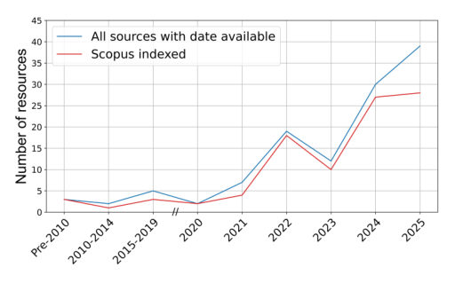
<figcaption class="paper-figure-caption"><b>Fig 1.</b> FIG. 1. Comparison of total entries in our dataset vs. Sco- pus indexed resources by year. Note the abrupt change in x axis scale and the inflection point in approximately 2020- 2021. Five resources with a 2026 publication date (typically released as preprints or early access in 2025), are not shown.</figcaption>
</figure>
</div>
<p><strong>Summary.</strong> This resource letter provides a comprehensive guide to the state of Quantum Information Science and Engineering (QISE) education. It surveys best practices for teaching QISE from high school through graduate levels, addressing curriculum design, assessment tools, and ethical implications. The paper is crucial reading for educators seeking to build robust quantum curricula in an expanding field.</p>
<p><strong>Why it may be interesting.</strong> While not focused on fundamental physics, it highlights the practical educational challenges associated with emerging quantum technologies, which informs how theoretical concepts must be taught to the next generation of researchers.</p>
<details>
<summary>Detailed structure</summary>
<p><strong>Main problem.</strong> The paper surveys the rapidly expanding field of Quantum Information Science and Engineering (QISE) education, aiming to guide educators and DBER practitioners.</p>
<p><strong>Main result.</strong> It identifies significant gaps in current QISE education literature regarding global access disparities, specific technical skills needed for industry, and pedagogical best practices across K-12 to graduate levels.</p>
<p><strong>Method.</strong> The methodology involves a comprehensive literature review synthesizing findings from multiple studies using bibliometric analysis, qualitative interviews, and curriculum mapping.</p>
<p><strong>Model / system.</strong> The focus is not on a physical Hamiltonian but rather on the educational model of QISE itself, covering topics like quantum computing, communication, and sensing principles.</p>
<p><strong>Key observables.</strong> Student reasoning levels, curricular coverage (K-12 to grad), assessment validity, workforce skill gaps, and ethical awareness.</p>
<p><strong>Important parameters / regimes.</strong> Educational level (High School vs. Graduate), geographical location (Global North vs. Global South), and pedagogical approach (e.g., project-based learning).</p>
<p><strong>Assumptions / limitations.</strong> The field is growing rapidly enough to require a curated resource guide, but the literature base suffers from disciplinary silos.</p>
<p><strong>Figures summary.</strong> One figure tracks the growth of QISE scholarship over time, showing an inflection point around 2020-2021.</p>
<p><strong>Paper structure.</strong> The structure is a comprehensive survey, covering scoping the field, reviewing pedagogical methods (labs, AI tools), analyzing workforce needs, and concluding with recommendations for future research directions.</p>
</details>
<details>
<summary>Abstract</summary>
<p>In celebration of the 2025 UN International Year of Quantum Science and Technology, this Resource Letter surveys the rapidly-growing field of scholarship in quantum information science and engineering (QISE) education. It is primarily written as a guide for educators wishing to get started teaching QISE using research-based teaching methods, as well as for discipline-based education research (DBER) practitioners looking to get started in this field. Topics covered include scoping the field of QISE education, research into student reasoning in QISE, research-based and research-inspired curricular materials from the high school to graduate level, research-based assessments, simulation and gamification tools, and tools for incorporating discussion of the societal and ethical implications of quantum technologies into the classroom.</p>
</details>
<p><sub><a href="#top">↑ back to top</a></sub></p>

<p><a id="paper-2606.05968"></a></p>
<h3 id="shattering-the-symmetry-trap-in-fixed-ansatz-vqe-an-accelerated-adapt-vqe-study-of-three-pillar-molecules-under-bravyi-kitaev-mapping"><a href="http://arxiv.org/abs/2606.05968v1">Shattering the Symmetry Trap in Fixed-Ansatz VQE: An Accelerated ADAPT-VQE Study of Three Pillar Molecules under Bravyi-Kitaev Mapping</a></h3>
<p><strong>Authors:</strong> Hermawan Kresno Dipojono<br>
<strong>Type:</strong> theory · <strong>Category:</strong> strongly correlated electrons · <strong>PDF:</strong> <a href="https://arxiv.org/pdf/2606.05968v1">https://arxiv.org/pdf/2606.05968v1</a><br>
<strong>Analysis basis:</strong> full PDF text, analyzed in chunks</p>
<div class="figure-strip-hint">↔ Scroll figures horizontally</div>
<div class="paper-figures-scroll">
<figure class="paper-figure-card">
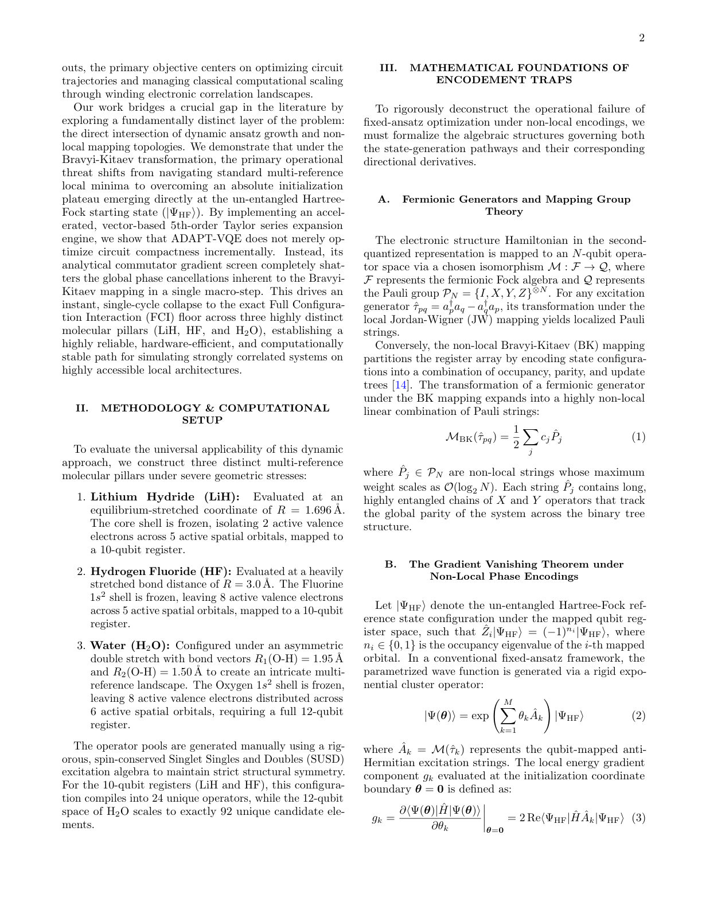
<figcaption class="paper-figure-caption"><b>Fig 1.</b> Low-resolution page preview, page 2</figcaption>
</figure>
<figure class="paper-figure-card">
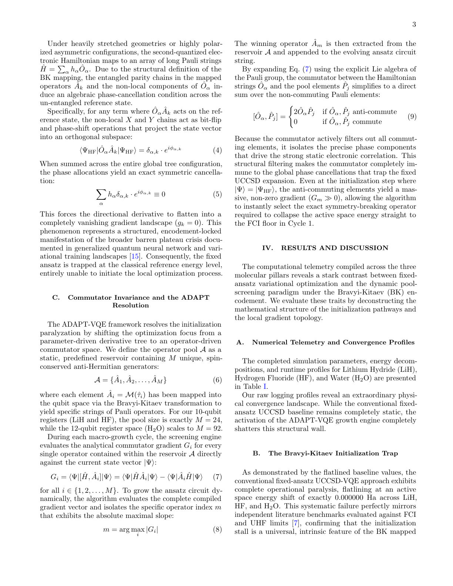
<figcaption class="paper-figure-caption"><b>Fig 2.</b> Low-resolution page preview, page 3</figcaption>
</figure>
<figure class="paper-figure-card">
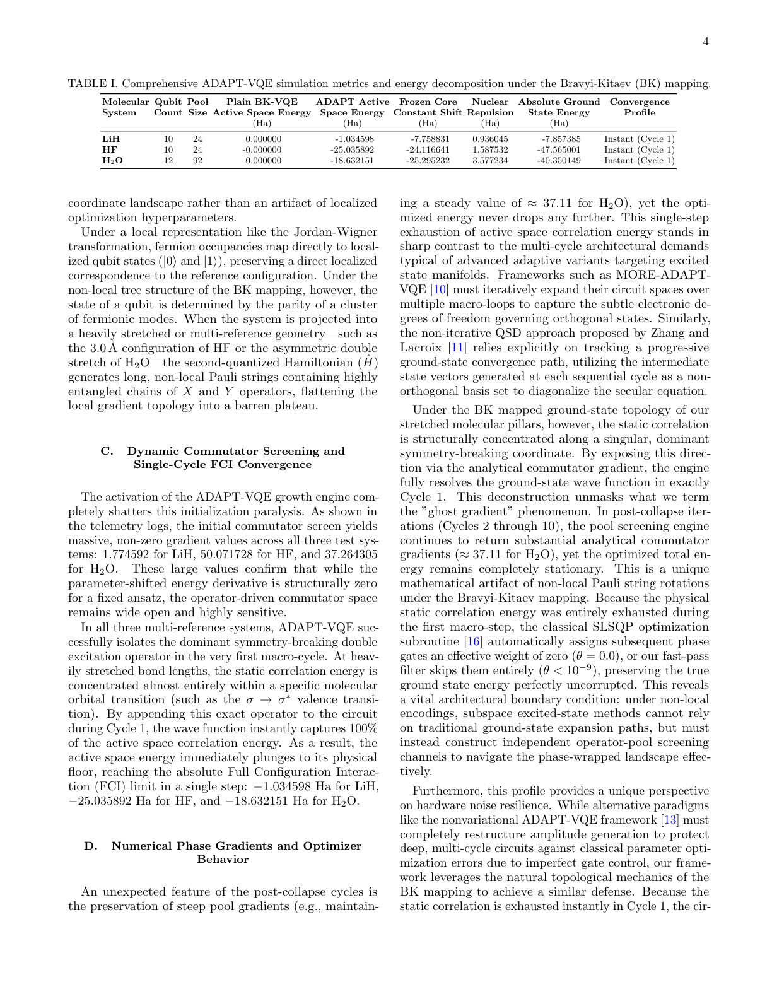
<figcaption class="paper-figure-caption"><b>Fig 3.</b> Low-resolution page preview, page 4</figcaption>
</figure>
<figure class="paper-figure-card">
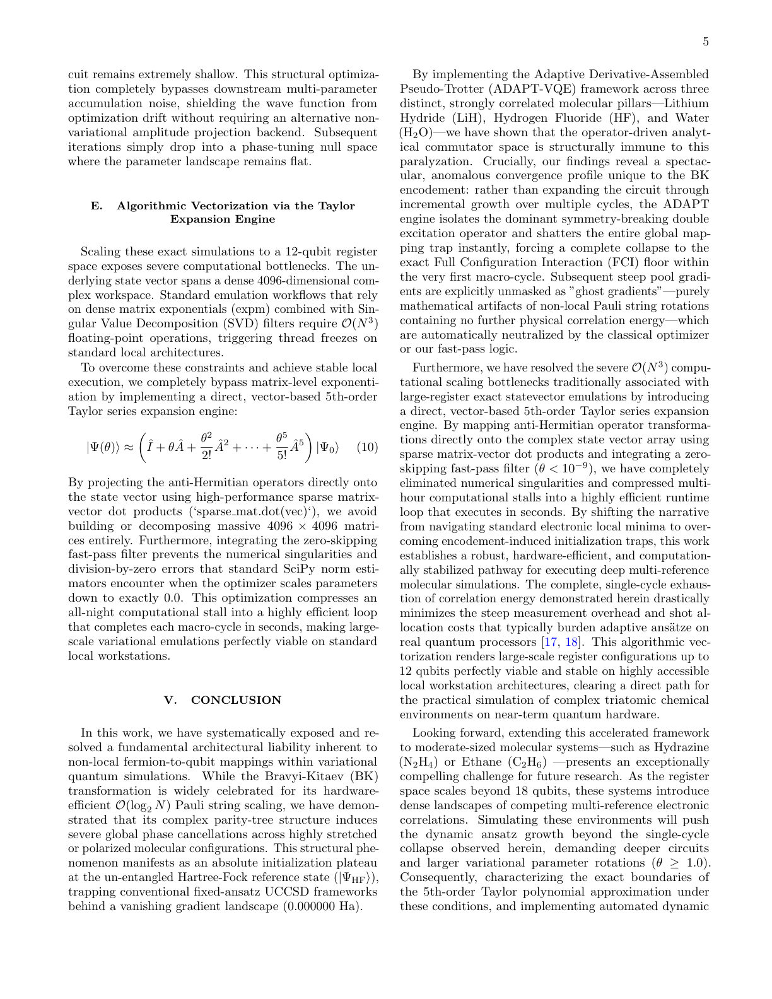
<figcaption class="paper-figure-caption"><b>Fig 4.</b> Low-resolution page preview, page 5</figcaption>
</figure>
<figure class="paper-figure-card">
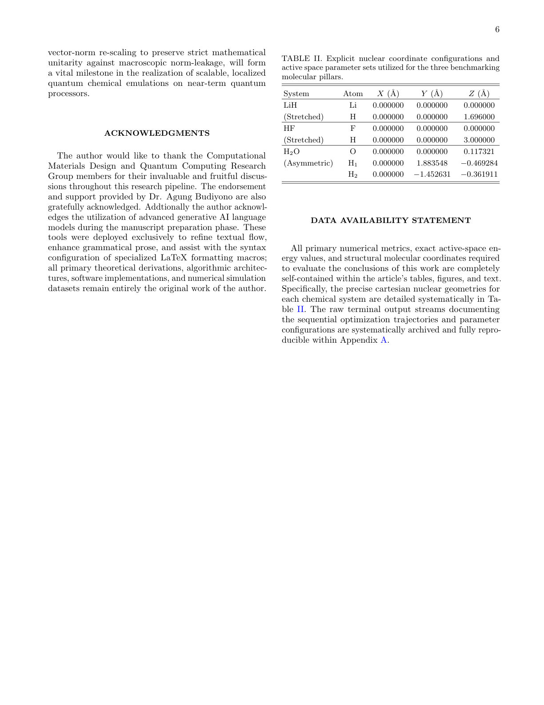
<figcaption class="paper-figure-caption"><b>Fig 5.</b> Low-resolution page preview, page 6</figcaption>
</figure>
</div>
<p><strong>Summary.</strong> The paper addresses the failure of standard VQE methods when simulating complex molecules using the Bravyi-Kitaev mapping due to global phase cancellations. By implementing an advanced ADAPT-VQE strategy, the authors demonstrate a robust method that instantly converges to the exact FCI energy for $    ext{LiH}$, $    ext{HF}$, and $ ext{H}_2    ext{O}$ while maintaining computational efficiency up to 12 qubits.</p>
<p><strong>Why it may be interesting.</strong> This work provides a crucial algorithmic breakthrough for applying quantum computation to chemistry by solving the fundamental problem of initialization paralysis in strongly correlated electronic structure calculations.</p>
<details>
<summary>Detailed structure</summary>
<p><strong>Main problem.</strong> Fixed-ansatz VQE methods fail catastrophically when simulating strongly correlated molecular systems using non-local mappings like Bravyi-Kitaev, getting trapped in zero-gradient plateaus.</p>
<p><strong>Main result.</strong> The ADAPT-VQE framework successfully overcomes these structural limitations by dynamically selecting symmetry-breaking operators, achieving instant convergence to the exact Full Configuration Interaction (FCI) energy in a single step for multiple molecules.</p>
<p><strong>Method.</strong> The study employs the Adaptive Derivative-Assembled Pseudo-Trotter (ADAPT-VQE) algorithm combined with an accelerated, vector-based Taylor series expansion engine to simulate quantum evolution efficiently on near-term hardware.</p>
<p><strong>Model / system.</strong> The system models are three small molecules ($  ext{LiH}$, $    ext{HF}$, and $ ext{H}_2    ext{O}$) studied under highly stretched or asymmetric multi-reference electronic configurations, mapped onto a qubit register via the Bravyi-Kitaev transformation.</p>
<p><strong>Key observables.</strong> Energy gradient ($g_k$), convergence to FCI energy floor (e.g., $-25.035892$ Ha for $ ext{HF}$), and detection of 'ghost gradients' as artifacts.</p>
<p><strong>Important parameters / regimes.</strong> 12-qubit register space, 5th-order Taylor expansion order, and the specific molecular geometries ($ ext{LiH}$, $    ext{HF}$, $ ext{H}_2    ext{O}$).</p>
<p><strong>Assumptions / limitations.</strong> The primary assumption is that ADAPT can dynamically isolate the necessary symmetry-breaking operators to bypass global phase cancellations inherent in the BK mapping structure.</p>
<p><strong>Figures summary.</strong> Logs (Appendix A) demonstrate initial zero-gradient traps for fixed methods, followed by successful energy convergence after operator addition via the ADAPT cycle for all three molecules.</p>
<p><strong>Paper structure.</strong> The paper diagnoses the failure of standard UCCSD-VQE with BK mapping; it then introduces and validates the ADAPT-VQE framework using commutator gradients; finally, it details computational optimizations (Taylor series) and presents convergence results across $  ext{LiH}$, $    ext{HF}$, and $ ext{H}_2    ext{O}$.</p>
</details>
<details>
<summary>Abstract</summary>
<p>Fixed-ansatz Variational Quantum Eigensolvers (VQE), such as the Unitary Coupled Cluster with Singles and Doubles (UCCSD) framework, frequently suffer from severe initialization paralyzation and zero-gradient traps when evaluated using the non-local Bravyi-Kitaev (BK) fermion-to-qubit mapping. In this work, we systematically demonstrate how the Adaptive Derivative-Assembled Pseudo-Trotter (ADAPT-VQE) framework shatters these structural limitations across three distinct electronic and geometric molecular pillars: Lithium Hydride ($\text{LiH}$), Hydrogen Fluoride ($\text{HF}$), and Water ($\text{H}_2\text{O}$), under heavily stretched or asymmetric multi-reference configurations. While conventional UCCSD-VQE flatlines completely at a zero energy shift ($0.000000$~Ha) due to global phase cancellations inherent to the BK tree structures, our dynamic ADAPT-VQE loop successfully isolates the dominant symmetry-breaking operators using analytical commutator gradients. To bypass the severe $\mathcal{O}(N^3)$ computational bottlenecks of dense matrix exponentiation and Singular Value Decomposition on larger registers, we implement a highly optimized, vector-based Taylor series expansion state-evolution engine. Our numerical results show that the accelerated ADAPT-VQE framework achieves instant, exact Full Configuration Interaction (FCI) convergence within the very first macro-cycle across all three molecular systems, maintaining absolute numerical stability up to a 12-qubit register space. This study establishes a robust, hardware-efficient path for simulating strongly correlated, highly polarized triatomic chemical environments on near-term local architectures.</p>
</details>
<p><sub><a href="#top">↑ back to top</a></sub></p>

<p><a id="paper-2606.05865"></a></p>
<h3 id="symmetry-adapted-qubit-encoding-with-complete-active-space-and-bravyi-kitaev-mapping-for-quantum-chemistry-on-a-quantum-computer"><a href="http://arxiv.org/abs/2606.05865v1">Symmetry-adapted qubit encoding with complete active space and Bravyi--Kitaev mapping for quantum chemistry on a quantum computer</a></h3>
<p><strong>Authors:</strong> Dario Picozzi, Jonathan Tennyson<br>
<strong>Type:</strong> theory · <strong>Category:</strong> strongly correlated electrons · <strong>PDF:</strong> <a href="https://arxiv.org/pdf/2606.05865v1">https://arxiv.org/pdf/2606.05865v1</a><br>
<strong>Analysis basis:</strong> full PDF text, analyzed in chunks</p>
<div class="figure-strip-hint">↔ Scroll figures horizontally</div>
<div class="paper-figures-scroll">
<figure class="paper-figure-card">
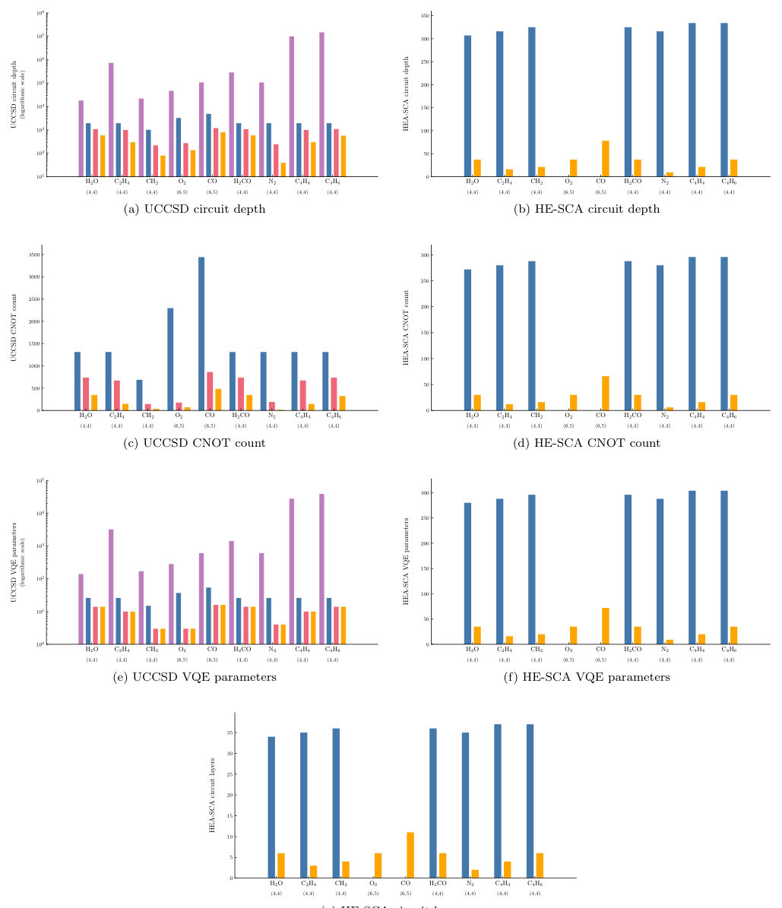
<figcaption class="paper-figure-caption"><b>Fig 1.</b> FIG. 1: Circuit complexity metrics corresponding to Tables I–II: circuit depth (UCCSD/HE-SCA), CNOT counts (UCCSD/HE-SCA), VQE parameter counts (UCCSD/HE-SCA), and HE-SCA circuit layers. SAE-CAS ( ) yields shallower circuits, fewer entangling gates, and fewer parameters than JW ( ), JW-CAS ( ) and JW-CAS (SF) ( ).</figcaption>
</figure>
<figure class="paper-figure-card">
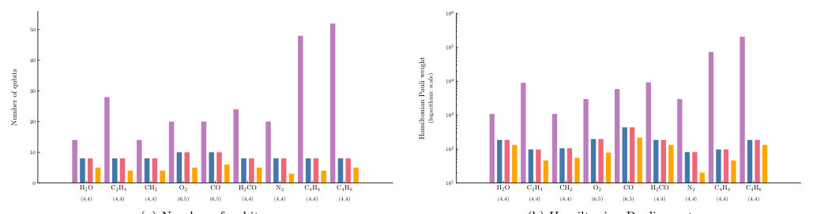
<figcaption class="paper-figure-caption"><b>Fig 2.</b> FIG. 2: Qubit resource metrics corresponding to Tables I–II: number of qubits and Hamiltonian Pauli count across all molecules in Tables I–II. SAE-CAS ( ) reduces both relative to JW ( ), JW-CAS ( ) and JW-CAS (SF) ( ).</figcaption>
</figure>
<figure class="paper-figure-card">
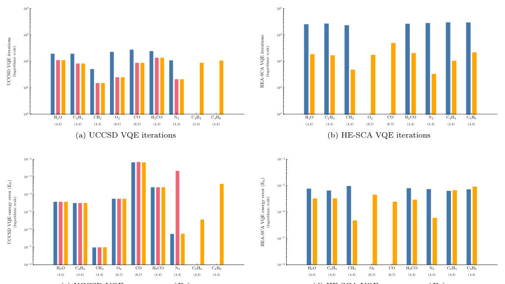
<figcaption class="paper-figure-caption"><b>Fig 3.</b> FIG. 3: Optimisation and accuracy metrics corresponding to Tables I–II. Panels: (a,b) VQE iteration counts for UCCSD and HE-SCA; (c,d) absolute VQE energy errors relative to the CAS energy calculated in PySCF in units of Hartree. Encoding symmetry at the mapping level with SAE-CAS ( ) reduces iteration counts with respect to JW-CAS ( ) and JW-CAS (SF) ( ) and allows us to attain CAS energies with HE-SCA in cases where the unreduced JW-CAS ansatz did not converge within the same budgets.</figcaption>
</figure>
<figure class="paper-figure-card">
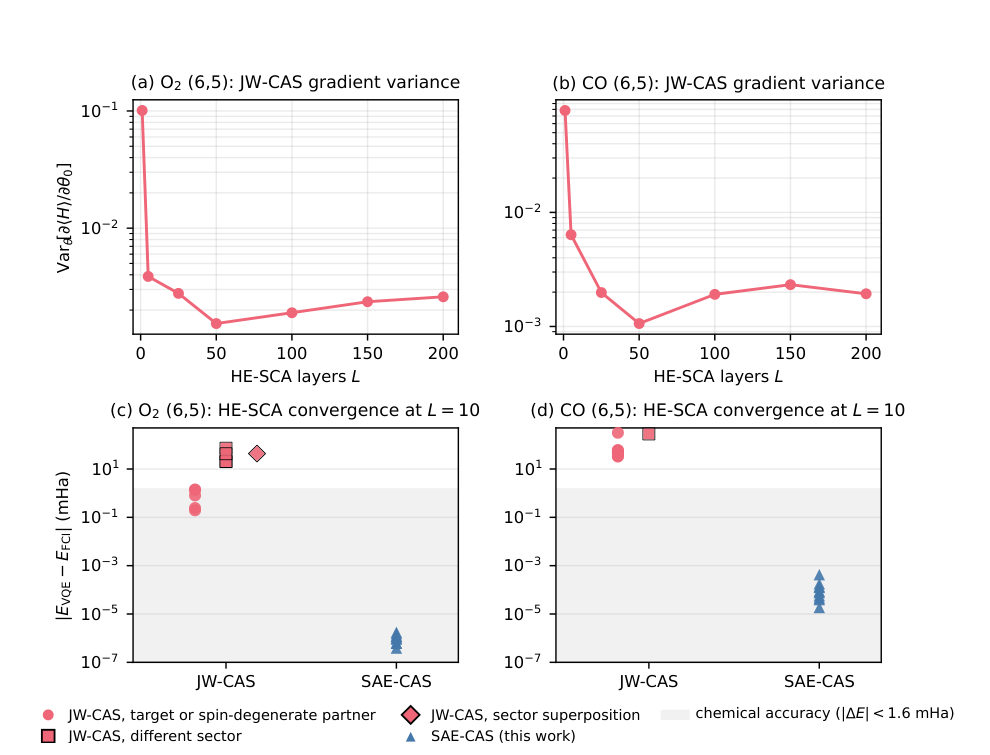
<figcaption class="paper-figure-caption"><b>Fig 4.</b> FIG. 4: Diagnostics for the HE-SCA convergence limitations on JW-CAS, side by side for O2 (6,5) (left column) and CO (6,5) (right column). Top row, (a, b): gradient variance Varθ[∂⟨H⟩/∂θ0] on the JW-CAS HE-SCA ansatz over 50 random θ samples, as a function of layer count L. In both molecules the variance drops about two orders of magnitude from L=1 to L=5 and then saturates near 10−3; there is no exponential decay, ruling out a classical barren plateau. Bottom row, (c, d): per-trial absolute convergence error |EVQE −EFCI| on a log scale, over 10 SLSQP runs from independent uniformly-random initialisations at the same depth L=10 for both JW-CAS and SAE-CAS. Marker shapes encode the...</figcaption>
</figure>
</div>
<p><strong>Summary.</strong> This paper introduces Symmetry-adapted qubit encoding (SAE-CAS) to make quantum chemistry simulations feasible on current quantum computers. By mathematically incorporating symmetry constraints from the Complete Active Space approximation, it drastically reduces the required number of qubits and circuit depth compared to standard methods. This advancement offers a crucial pathway toward resource-efficient molecular simulation.</p>
<p><strong>Why it may be interesting.</strong> This work directly addresses the computational bottleneck of simulating strongly correlated electron systems on quantum hardware by providing a systematic method to exploit molecular symmetries for resource reduction.</p>
<details>
<summary>Detailed structure</summary>
<p><strong>Main problem.</strong> Developing resource-efficient methods for simulating quantum chemistry on near-term and fault-tolerant quantum computers.</p>
<p><strong>Main result.</strong> The Symmetry-adapted qubit encoding (SAE-CAS) significantly reduces required qubits, Pauli operator weight, and circuit depth compared to standard Jordan-Wigner mappings, leading to faster convergence.</p>
<p><strong>Method.</strong> The authors derive a symmetry-adapted mapping that incorporates Complete Active Space (CAS) constraints as approximate Z-symmetries, allowing for qubit reduction via affine Clifford transformations.</p>
<p><strong>Model / system.</strong> The system is molecular electronic structure, modeled by the non-relativistic Born–Oppenheimer Hamiltonian in second quantization. The simulation uses UCCSD and HE-SCA ansätze on small molecules like H2O and O2.</p>
<p><strong>Key observables.</strong> Qubit count, Pauli-operator weight, circuit depth/CNOT count, VQE convergence error relative to CAS reference energies.</p>
<p><strong>Important parameters / regimes.</strong> CAS approximation parameters (frozen core, active, virtual orbitals); ansatz choice (UCCSD vs HE-SCA).</p>
<p><strong>Assumptions / limitations.</strong> The primary assumption is that treating CAS constraints as approximate Z-symmetries preserves the target symmetry sector while minimizing resource overhead.</p>
<p><strong>Figures summary.</strong> Figures compare circuit complexity metrics and qubit resource metrics across different encodings, showing SAE-CAS consistently outperforms JW-based methods.</p>
<p><strong>Paper structure.</strong> The paper builds mathematically by deriving Hamiltonian mappings from second quantization to active-space qubits (SAE-CAS), proves its equivalence to canonical CAS forms, benchmarks it against other mappings (JW, BK) using small molecules and ansätze, and concludes with resource efficiency comparisons.</p>
</details>
<details>
<summary>Abstract</summary>
<p>We present a symmetry-adapted qubit encoding with complete active space (SAE-CAS) for quantum chemistry on fault-tolerant and near-term quantum processors. Building on exact-symmetry encodings, we extend symmetry-adapted mappings to approximate $Z$-symmetries corresponding to frozen-core and virtual orbitals, thereby reducing qubit requirements without significant loss of accuracy. We derive the mapping from the second-quantised Hamiltonian to active-space qubit Hamiltonians, prove its equivalence to the canonical CAS Hamiltonian with frozen-core and virtual-orbital projection, and integrate it with point-group and spin-parity symmetry encodings via affine Clifford transformations to maximise qubit reduction while preserving the target symmetry sector. The same framework also accommodates the Bravyi--Kitaev mapping, yielding an SAE-CAS-BK variant that is unitarily equivalent to SAE-CAS. Numerical benchmarking on nine small molecules using UCCSD and a hardware-efficient shifted-circular-alternating (HE-SCA) ansatz shows that SAE-CAS reduces qubit counts and Pauli-operator weight, yields shallower circuits with fewer parameters, and often accelerates VQE convergence; with HE-SCA it consistently reaches CAS reference energies in cases where JW-CAS does not converge within the tested budgets. We provide an open-source implementation in the Python package QuantumSymmetry. SAE-CAS offers a route to resource-efficient molecular simulations on fault-tolerant and near-term quantum processors.</p>
</details>
<p><sub><a href="#top">↑ back to top</a></sub></p>

<p><a id="paper-2606.06144"></a></p>
<h3 id="unveiling-orbital-landscapes-in-strongly-correlated-bulk-nickelates-with-math825math-nixs"><a href="http://arxiv.org/abs/2606.06144v1">Unveiling orbital landscapes in strongly correlated bulk nickelates with $s$-NIXS</a></h3>
<p><strong>Authors:</strong> Edgar Abarca Morales, Martin Sundermann, Brett Leedahl, Vignesh Sundaramurthy, Georg Poelchen, Ulrich Burkhardt, Raul Cardoso, Pascal Puphal, Alexander Komarek, Bernhard Keimer, Matthias Hepting, Liu Hao Tjeng, Berit H. Goodge<br>
<strong>Type:</strong> experiment · <strong>Category:</strong> strongly correlated electrons · <strong>PDF:</strong> <a href="https://arxiv.org/pdf/2606.06144v1">https://arxiv.org/pdf/2606.06144v1</a><br>
<strong>Analysis basis:</strong> full PDF text, analyzed in chunks</p>
<div class="figure-strip-hint">↔ Scroll figures horizontally</div>
<div class="paper-figures-scroll">
<figure class="paper-figure-card">
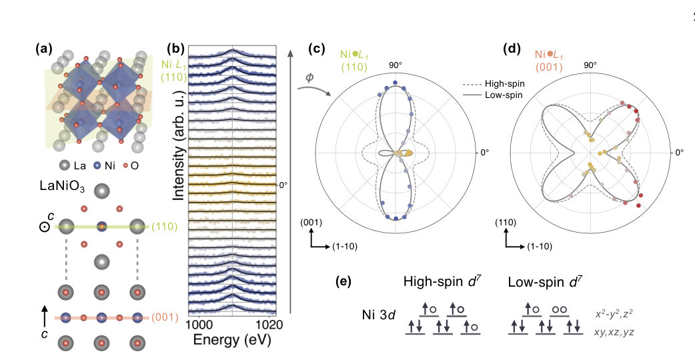
<figcaption class="paper-figure-caption"><b>Fig 1.</b> FIG. 1. Orbital imaging in LaNiO3. (a) Pseudo-cubic unit cell of LaNiO3 and two high-symmetry projections in which octahedral distortions are omitted for clarity. The (110) and (001) scattering planes are indicated in green and salmon respectively. (b) Ni L1 edge spectra measured within the (110) plane and fitted using Voigt distributions (black lines). Spectra are vertically offset by ϕ for clarity. (c) Polar plot of the integrated intensities from the Voigt fits in (b). The expected orbital hole shapes for the high- and low-spin configurations are indicated by dashed and solid gray lines, respectively. (d) Polar plot obtained from the analysis of the spectra within the (001) plane...</figcaption>
</figure>
<figure class="paper-figure-card">
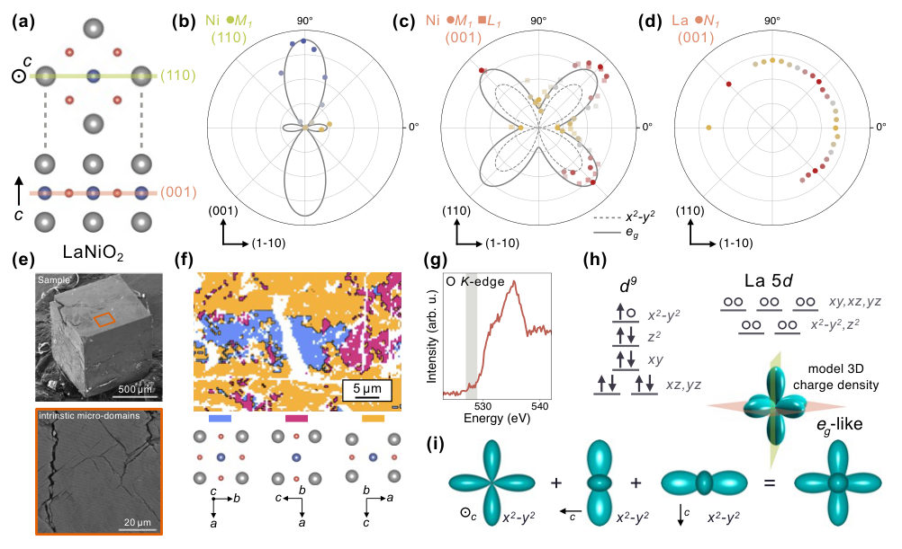
<figcaption class="paper-figure-caption"><b>Fig 2.</b> FIG. 2. Orbital imaging in LaNiO2. (a) Crystal structure of LaNiO2 with the (001) and (110) scattering planes indicated. (b) Polar plot obtained from the Ni M1 edge spectra within the (110) plane. (c) Polar plots from the Ni M1 edge and L1 edge spectra within the (001) plane. The eg and dx2−y2 orbital shapes are indicated by gray lines. (d) Polar plot from the La N1 edge spectra within the (001) plane. (e) Bulk LaNiO2 sample with inset showing intrinsic micro-domain formation. (f) EBSD map of LaNiO2 showing three orthogonal domains and their schematic microscopic configuration (adapted from [32]). (g) O K-edge XAS of LaNiO2 a lack of the O pre-peak (region highlighted in gray). (h)...</figcaption>
</figure>
<figure class="paper-figure-card">
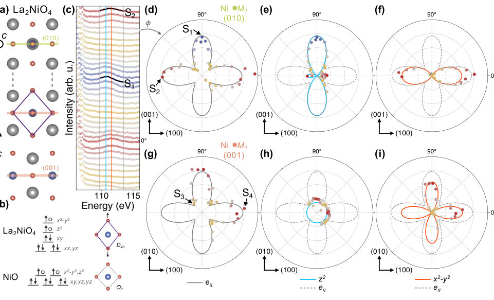
<figcaption class="paper-figure-caption"><b>Fig 3.</b> FIG. 3. Orbital imaging in La2NiO4. (a) Crystal structure of La2NiO4 indicating the (010) and (001) scattering planes as well as the octahedral coordination around the Ni site. (b) Schematic electronic configurations for the Ni ground state in La2NiO4 and NiO in a single-electron picture, illustrating the eg splitting due to the apical octahedral distortion in La2NiO4.(c) Ni M1 edge spectra measured within the (010) plane, vertically offset by ϕ. The spectra selected to form the basis for orbital decomposition are marked in black, labeled S1 and S2. From this analysis, a dz2 component is identified at the blue line, while a dx2−y2 component is found at the red line. (d) Polar plot of the...</figcaption>
</figure>
</div>
<p><strong>Summary.</strong> This work pioneers the use of s-NIXS to perform 'orbital imaging' on bulk nickelates ($    ext{LaNiO}_3$, $    ext{La}_2   ext{NiO}_4$, etc.). By analyzing the angular dependence of X-ray scattering, the authors directly determine the orbital ground state symmetries and quantify crystal field splittings without relying heavily on complex theoretical input. This technique establishes s-NIXS as a powerful tool for studying correlated electron physics.</p>
<p><strong>Why it may be interesting.</strong> The direct, model-independent measurement of orbital character and crystal field splitting in strongly correlated oxides provides crucial experimental benchmarks for theoretical models describing electron correlations and orbital ordering.</p>
<details>
<summary>Detailed structure</summary>
<p><strong>Main problem.</strong> The study aims to understand and control orbital degrees of freedom in strongly correlated nickelates, which is crucial for designing functional materials.</p>
<p><strong>Main result.</strong> s-NIXS directly reveals the ground state orbital configurations (e.g., low-spin $  ext{LaNiO}_3$, $d_{x^2-y^2}$ $    ext{LaNiO}_2$) and quantifies crystal field splitting ($\Delta = 0.9     ext{ eV}$) in these materials.</p>
<p><strong>Method.</strong> The primary method is s-orbital non-resonant inelastic X-ray scattering (s-NIXS), which performs 'orbital imaging' by measuring the angular dependence of energy loss spectra.</p>
<p><strong>Model / system.</strong> The research focuses on bulk rare-earth nickelates ($   ext{LaNiO}_3$, $    ext{La}_2   ext{NiO}_4$, $  ext{LaNiO}_2$) spanning different formal Ni valence states, allowing investigation of orbital physics in correlated oxides.</p>
<p><strong>Key observables.</strong> Angular dependence of integrated spectral intensity (polar plots), energy differences between spectral components ($d_{z^2}$ vs $d_{x^2-y^2}$), and the resulting crystal field splitting ($\Delta$).</p>
<p><strong>Important parameters / regimes.</strong> Formal Ni valence states ($ ext{Ni}^{3+}$ to $  ext{Ni}^{1+}$); Crystal field splitting energy (e.g., $0.9 	ext{ eV}$).</p>
<p><strong>Assumptions / limitations.</strong> The technique is assumed to provide a direct, model-independent measurement of the electronic ground state charge density, bypassing complex theoretical calculations.</p>
<p><strong>Figures summary.</strong> Figures illustrate orbital imaging via polar plots for $   ext{LaNiO}_3$ and $ ext{LaNiO}_2$, and show spectral fitting results detailing the decomposition of $d_{z^2}$ and $d_{x^2-y^2}$ contributions in $  ext{La}_2   ext{NiO}_4$.</p>
<p><strong>Paper structure.</strong> The paper systematically applies s-NIXS to three different nickelates ($   ext{LaNiO}_3$, $    ext{LaNiO}_2$, $    ext{La}_2   ext{NiO}_4$), using orbital imaging and spectral fitting across various crystal planes to map out the electronic ground state symmetries.</p>
</details>
<details>
<summary>Abstract</summary>
<p>We leverage $s$-orbital non-resonant inelastic X-ray scattering ($s$-NIXS) to perform orbital imaging on three bulk rare-earth nickelates spanning a range of formal nickel valence (3$d$ electron filling) from Ni$^{3+}$ (3$d^7$) to Ni$^{1+}$ (3$d^9$). Our results directly reveal the ground states of these compounds all with minimal theoretical input. In particular, we demonstrate the low-spin orbital configuration of trivalent LaNiO$_3$, the $d_{x^2-y^2}$ configuration of monovalent LaNiO$_2$, and resolve the effective $e_g$ crystal field splitting in the distorted octahedral environment of divalent La$_2$NiO$_4$. This work illustrates the potential of $s$-NIXS to study the ground state and excited states of strongly correlated materials without needing complex theoretical analysis of spectroscopic data.</p>
</details>
<p><sub><a href="#top">↑ back to top</a></sub></p>
</details>
<h2 id="secondary-cond-mat-archives">Secondary cond-mat archives</h2>
<p><em>Papers from cond-mat.mtrl-sci, mes-hall, other, soft, supr-con. These archives are de-prioritized — they appear at the end regardless of relevance score.</em></p>
<h3 id="relevant-in-secondary-archives-11">Relevant in secondary archives (11)</h3>

<p><a id="paper-2606.06152"></a></p>
<h3 id="24-ghz-flip-flop-device-within-nonequilibrium-superconducting-diode"><a href="http://arxiv.org/abs/2606.06152v1">2.4 GHz Flip-flop Device within Nonequilibrium Superconducting Diode</a></h3>
<p><strong>Authors:</strong> Xiangyu Bi, Hongyi Li, Aoshen Yang, Yuqiang Fang, Ganyu Chen, Shichong Yang, Yicheng Shen, Qizheng Sun, Junwei Huang, Wei Jiang, Da Wang, Fuqiang Huang, Haijun Zhang, Qianghua Wang, Hongtao Yuan<br>
<strong>Type:</strong> both · <strong>Category:</strong> other · <strong>PDF:</strong> <a href="https://arxiv.org/pdf/2606.06152v1">https://arxiv.org/pdf/2606.06152v1</a><br>
<strong>Analysis basis:</strong> full PDF text, analyzed in chunks
<strong>Topic relevance:</strong> 🔥 <code>non-equilibrium dynamics</code> <strong>4/5</strong> · <code>driven-dissipative phase transition</code> <strong>3/5</strong> · <code>methods for driven-dissipative</code> <strong>3/5</strong> · <code>correlated / nonlocal dissipation</code> <strong>2/5</strong> · <code>non-equilibrium universality</code> <strong>2/5</strong> · <code>Keldysh / 2PI / non-Gaussian methods</code> <strong>1/5</strong> · <code>Kondo &amp; dissipative impurity</code> <strong>1/5</strong> · <code>QC/QI experiment</code> <strong>1/5</strong></p>
<div class="figure-strip-hint">↔ Scroll figures horizontally</div>
<div class="paper-figures-scroll">
<figure class="paper-figure-card">
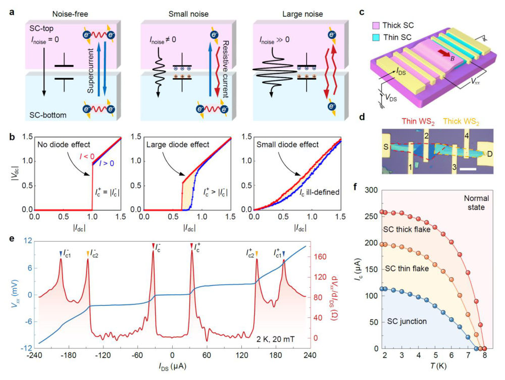
<figcaption class="paper-figure-caption"><b>Fig 1.</b> Fig. 1 | Superconducting diode effect without breaking time-reversal symmetry in 2M-WS2</figcaption>
</figure>
<figure class="paper-figure-card">
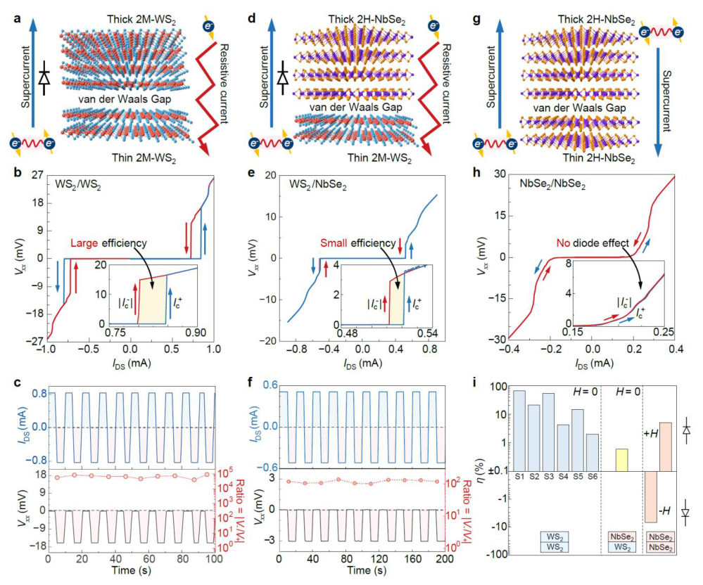
<figcaption class="paper-figure-caption"><b>Fig 2.</b> Fig. 2 | Geometry comparison for superconducting diode effect among three different device</figcaption>
</figure>
<figure class="paper-figure-card">

<figcaption class="paper-figure-caption"><b>Fig 3.</b> Fig. 3 | Modulation of superconducting diode effect in 2M-WS2-based Josephson junctions. a,</figcaption>
</figure>
<figure class="paper-figure-card">

<figcaption class="paper-figure-caption"><b>Fig 4.</b> Fig. 4 | High frequency and broadband edge-triggered flip-flop device from 2 mHz to 2.4 GHz.</figcaption>
</figure>
</div>

<p><strong>Summary.</strong> This paper reports on the realization of a highly efficient, field-free superconducting diode operating at 2.4 GHz using van der Waals superconductors. By engineering junction asymmetry, they achieved robust rectification and demonstrated its application in an edge-triggered flip-flop. This work provides a promising platform for next-generation superconducting logic circuits.</p>
<p><strong>Why it may be interesting.</strong> The work bridges condensed matter physics (superconductivity) with device engineering by showing how fundamental quantum effects (non-equilibrium dynamics) can be harnessed for high-speed classical electronic components, relevant to superconducting circuit design.</p>
<details>
<summary>Detailed structure</summary>
<p><strong>Main problem.</strong> The primary challenge addressed is achieving high-frequency, field-free superconducting diode operation for practical superconducting electronics.</p>
<p><strong>Main result.</strong> The authors demonstrated a polarity-controllable superconducting diode flip-flop operating up to 2.4 GHz using van der Waals superconductors, exhibiting high efficiency and an on-off ratio exceeding $10^5$.</p>
<p><strong>Method.</strong> The work combines experimental measurements (I-V curves, high-frequency pulse generation) with theoretical modeling using the Resistively Shunted Junction (RCSJ) model.</p>
<p><strong>Model / system.</strong> The physical system utilizes Josephson junctions formed in van der Waals superconductor heterojunctions ($  ext{2M-WS}_2/   ext{NbSe}_2$). The underlying mechanism is explained by non-equilibrium dynamics and geometric inversion asymmetry, which allows for diode behavior without breaking time-reversal symmetry.</p>
<p><strong>Key observables.</strong> Diode efficiency ($\eta$), on-off ratio ($>10^5$), operating frequency (up to 2.4 GHz), and measurable supercurrent asymmetry ($I_{c+} 
eq |I_{c-}|$).</p>
<p><strong>Important parameters / regimes.</strong> Thickness tuning of $   ext{2M-WS}_2$ nanoflakes, junction geometry, input signal waveform (sine, triangle, chainsaw).</p>
<p><strong>Assumptions / limitations.</strong> The nonreciprocal effect is robustly explained by the nonlinear quantum capacitance mechanism within the RCSJ framework, which accounts for noise and geometric asymmetry.</p>
<p><strong>Figures summary.</strong> Figures illustrate I-V characteristics confirming Josephson junctions, compare diode efficiency across different geometries, and show the output pulse signal generation from the flip-flop device at high frequencies.</p>
<p><strong>Paper structure.</strong> The paper progresses by first establishing the feasibility of field-free superconducting diodes using $    ext{WS}_2$ heterojunctions, then detailing the mechanism via RCSJ modeling, and finally demonstrating the practical application through high-frequency edge-triggered flip-flop operation up to 2.4 GHz.</p>
</details>
<details>
<summary>Abstract</summary>
<p>Superconducting diode effect exhibits asymmetric critical supercurrent and has profound implications for condensed matter physics. The technical appeals of such superconducting diodes are their ultrahigh on-off ratio and diode efficiency for superconducting electronics owing to the dissipationless supercurrent therein. However, realizing superconducting diode operation at high working frequency, which is a key requirement for practical applications, remains elusive and challenging. Here, we demonstrate a polarity-controllable superconducting diode with non-equilibrium Josephson junction and its edge-triggered flip-flop operation at a high frequency up to 2.4 GHz, within a van der Waals superconductor 2M-WS$_2$. By simply tuning the thickness of superconducting 2M-WS$_2$ nanoflakes to engineer inversion asymmetry in the junction, we achieve a high diode efficiency of 67% and an on-off ratio exceeding 10$^5$. Importantly, the pulse width and duty cycle of output pulse signals in such superconducting diode flip-flop devices can be controlled in a broadband frequency range crossing 12 orders of magnitude. Theoretical analysis reveals that the non-equilibrium dynamic nature of supercurrent in these Josephson junctions enables such a high diode operating frequency and the polarity control of supercurrent. The 2.4 GHz non-equilibrium Josephson diode developed here provides a promising platform for advanced superconducting logic circuits and broadband telecommunication applications.</p>
</details>
<p><sub><a href="#top">↑ back to top</a></sub></p>

<p><a id="paper-2606.06465"></a></p>
<h3 id="superconducting-triode-effect-in-a-quantum-dot-josephson-junction-with-a-biased-top-gate"><a href="http://arxiv.org/abs/2606.06465v1">Superconducting triode effect in a quantum-dot Josephson junction with a biased top gate</a></h3>
<p><strong>Authors:</strong> Yu-Hang Li, Xiaan Du, Hua Jiang, X. C. Xie<br>
<strong>Type:</strong> theory · <strong>Category:</strong> other · <strong>PDF:</strong> <a href="https://arxiv.org/pdf/2606.06465v1">https://arxiv.org/pdf/2606.06465v1</a><br>
<strong>Analysis basis:</strong> full PDF text, analyzed in chunks
<strong>Topic relevance:</strong> 🔥 <code>Keldysh / 2PI / non-Gaussian methods</code> <strong>4/5</strong> · <code>methods for driven-dissipative</code> <strong>3/5</strong> · <code>non-equilibrium dynamics</code> <strong>3/5</strong> · <code>driven-dissipative phase transition</code> <strong>2/5</strong> · <code>non-equilibrium universality</code> <strong>2/5</strong> · <code>Kondo &amp; dissipative impurity</code> <strong>1/5</strong></p>
<div class="figure-strip-hint">↔ Scroll figures horizontally</div>
<div class="paper-figures-scroll">
<figure class="paper-figure-card">

<figcaption class="paper-figure-caption"><b>Fig 1.</b> FIG. 1. Schematic for the STE in an asymmetric quantum- dot Josephson junction with an additional biased top gate (N). Here, the coupling strength between the quantum-dot and the three leads are tL, tR, and tM, respectively. The green line in top gate illustrates the Andreev reflection under a bias V . The yellow arrow illustrates the tunneling super- current between left (L) and right (R) superconducting leads driven by the phase difference ϕ = ϕL −ϕR. The cyan arrows highlight the normal-metal-assisted injection currents, medi- ated by non-equilibrium Andreev processes involving the top gate (N).</figcaption>
</figure>
<figure class="paper-figure-card">

<figcaption class="paper-figure-caption"><b>Fig 2.</b> FIG. 2. (a) and (b) Current-phase relations Is(ϕ) for a symmetric junction with tL = tR = 0.1 (a) and an asymmetric junction with tL = 0.2, tR = 0.1 (b) under different top gate bias V . Here, tM = 0.5. (c) Non-reciprocal supercurrent efficiency η on the V -δt plane. The red dashed line highlights the critical phase boundary with η = 1, which separates the normal non-reciprocal regime and the ideal regime that only allows the unidirectional supercurrent. The white dashed line highlights the cases in (a) and (b). Here, δt = tL−tR, tR = 0.1 and tM = 0.5.</figcaption>
</figure>
<figure class="paper-figure-card">

<figcaption class="paper-figure-caption"><b>Fig 3.</b> FIG. 3. (a) Maximum I+ c (solid lines) and minimum I− c (dashed lines) critical supercurrents of Is(ϕ) as a function of the scaled radiation amplitude eVac/ℏω for different top gate bias V . (b) and (c) I-V curve for the junction under different top gates V in the absence [(a), Vac = 0] and presence [(b), eVac/ℏω = 0.05] of radiation. The green shadings in the background highlight the symmetric supercurrent at V = 0, serving as a benchmark. The inset displays five representative Shapiro step widths versus scaled radiation amplitude at V = 0. (d) Differential resistance dV/dI versus total time-averaging current Ia and scaled radiation amplitude eVac/ℏω at a representative top bias V = 0.05....</figcaption>
</figure>
</div>

<p><strong>Summary.</strong> The paper introduces a novel 'superconducting triode effect' in a quantum-dot Josephson junction by incorporating a biased top gate. This setup allows the creation of strong supercurrent non-reciprocity—a key feature for superconducting diodes—while explicitly preserving time-reversal symmetry. The theoretical framework uses advanced Green's function techniques to predict tunable, quantized rectification effects.</p>
<p><strong>Why it may be interesting.</strong> This work provides an alternative, symmetry-preserving mechanism for observing diode-like behavior in superconductors, which is highly relevant to superconducting electronics and quantum circuit design.</p>
<details>
<summary>Detailed structure</summary>
<p><strong>Main problem.</strong> The research addresses how to achieve a robust Superconducting Diode Effect (SDE) in Josephson junctions while explicitly preserving Time-Reversal symmetry, which is conventionally thought to require breaking both T and P symmetries.</p>
<p><strong>Main result.</strong> They propose a superconducting triode effect using an asymmetric quantum-dot junction with a top gate bias that allows for the continuous tuning of supercurrent non-reciprocity towards an ideal unidirectional flow while maintaining T-symmetry.</p>
<p><strong>Method.</strong> The analysis employs the Keldysh Non-Equilibrium Green's Function (NEGF) formalism, extending to Floquet theory to handle time-periodic driving from RF radiation.</p>
<p><strong>Model / system.</strong> The system is an asymmetric quantum-dot Josephson junction coupled to superconducting leads and an additional metallic top gate. The Hamiltonian describes the coupling between these three components.</p>
<p><strong>Key observables.</strong> Current-Phase Relations (CPR), non-reciprocal supercurrent efficiency ($\eta$), and highly asymmetric Shapiro steps under RF irradiation.</p>
<p><strong>Important parameters / regimes.</strong> Top gate bias voltage ($V$), superconducting gap ($\Delta_0$), and the ratio of coupling strengths ($t_L, t_R, t_M$).</p>
<p><strong>Assumptions / limitations.</strong> The theory is derived using approximations like the weak-link limit for initial calculations but claims universality across coupling regimes.</p>
<p><strong>Figures summary.</strong> Figures illustrate CPR asymmetry vs. gate bias (Fig. 2), non-reciprocal efficiency ($\eta$) mapping, and highly asymmetric Shapiro step distributions under combined DC/RF drive (Fig. 3).</p>
<p><strong>Paper structure.</strong> The paper first establishes the physical model and the goal of achieving T-symmetric SDE via a superconducting triode effect. It then calculates supercurrent components using NEGF formalism in both DC and AC regimes, culminating in demonstrations of tunable non-reciprocity and quantized rectification.</p>
</details>
<details>
<summary>Abstract</summary>
<p>Non-reciprocal supercurrents enable non-dissipative rectification, holding great promise for superconducting electronics. Conventionally, this non-reciprocity, termed the superconducting diode effect, requires the simultaneous breaking of time-reversal and parity symmetries. Here, we propose a superconducting triode effect in an asymmetric quantum-dot Josephson junction coupled to an additional metallic top gate, which breaks the parity symmetry while explicitly preserving time-reversal symmetry. We demonstrate that the supercurrent across this junction exhibits a strong non-reciprocal effect that can be continuously manipulated via the top gate to achieve an ideal unidirectional supercurrent, thus manifesting a superconducting triode effect. Furthermore, under radio-frequency radiation, this junction exhibits highly asymmetric Shapiro steps, realizing fully quantized supercurrent rectification. Our work not only provides an alternative physical mechanism for the superconducting diode effect observed in Josephson junctions with explicit time-reversal symmetry, but also introduces a new tuning knob to manipulate supercurrent non-reciprocity.</p>
</details>
<p><sub><a href="#top">↑ back to top</a></sub></p>

<p><a id="paper-2606.05426"></a></p>
<h3 id="a-nanoscale-magnetic-spectrum-analyzer-based-on-qubit-dressed-states"><a href="http://arxiv.org/abs/2606.05426v1">A nanoscale magnetic spectrum analyzer based on qubit dressed states</a></h3>
<p><strong>Authors:</strong> Jan Rueschkamp, Shantam Ravan, Daniel Fernandez, Nazar Delegan, F. Joseph Heremans, David D. Awschalom, Ronald L. Walsworth, Nikola Maksimovic, Amir Yacoby<br>
<strong>Type:</strong> experiment · <strong>Category:</strong> other · <strong>PDF:</strong> <a href="https://arxiv.org/pdf/2606.05426v1">https://arxiv.org/pdf/2606.05426v1</a><br>
<strong>Analysis basis:</strong> full PDF text, analyzed in chunks
<strong>Topic relevance:</strong> 🔥 <code>QC/QI experiment</code> <strong>4/5</strong> · 🔥 <code>spintronics-quantum-optics interface</code> <strong>4/5</strong> · <code>exotic spin models in light-matter</code> <strong>1/5</strong> · <code>quantum measurements</code> <strong>1/5</strong> · <code>quantum optics experiment</code> <strong>1/5</strong></p>
<div class="figure-strip-hint">↔ Scroll figures horizontally</div>
<div class="paper-figures-scroll">
<figure class="paper-figure-card">

<figcaption class="paper-figure-caption"><b>Fig 1.</b> Figure 1. Measurement of qubit dressed states using a spin echo protocol. (a) Dressed state spin echo sequence with a probe field during one arm of length τ, which acts as an effective B field on the qubit (see supple- mental section B 1). Bloch sphere representation (above) shows effect of pulse sequence on qubit spin. (b) Calcu- lated dressed state energies (within the rotating frame) in comparison to the qubit bare states as a function of detuning, ∆, of the probe field from the bare resonance relative to the probe field Rabi rate, Ωprobe. The black dotted line describes the bare qubit excited state in the rotating frame, while the dashed line gives the summed energy of the bare qubit...</figcaption>
</figure>
<figure class="paper-figure-card">

<figcaption class="paper-figure-caption"><b>Fig 2.</b> Figure 3. Scaling of dressed state DD RF noise mea- surements on experimental parameters. (a) Dependence of the experimentally determined NV spin phase vari- ance ⟨ϕ2⟩on probe field amplitude, Bprobe, measurement time, τ, and probe field detuning from the NV resonance, ∆. The data is well-fitted by the scalings predicted by our model of this measurement scheme (Eq. 4). (b) Es- timate of noise floor, i.e. minimal detectable RF noise spectral density, as a function of Rabi rate Ωprobe and noise signal frequency f, obtained by extrapolating the noise floor in our experiment for one second of integra- tion where the Rabi rate ≈2.5 MHz.</figcaption>
</figure>
<figure class="paper-figure-card">

<figcaption class="paper-figure-caption"><b>Fig 3.</b> Figure 2. Measurement of broadband noise spectra us- ing qubit dressed states. (a) Dressed state spin echo sequence with probe field and noisy RF signal during both arms of length τ. The noise mixes with the probe field via the quadratic dependence of the qubit AC Stark shift on the total field amplitude. This mixing effectively imprints the noise onto the probe field, producing a fluc- tuating effective Rabi rate that induces decoherence in the qubit’s x–y plane. Sweeping the spin echo sequence filter function, which is set by the probe field frequency fprobe, and repeating spin echo measurements allows de- termination of S, the noise spectral density of the RF signal field. Bloch sphere...</figcaption>
</figure>
<figure class="paper-figure-card">

<figcaption class="paper-figure-caption"><b>Fig 4.</b> Fig. 3(b) further compares the noise floor of our dressed state DD to that of conventional DD noise magnetometry under comparable conditions. Con- ventional DD noise magnetometry is analyzed via the following relationship between ϕ2 and the noise floor η. In the limit of target noisy signal frequency much greater than DD sensing frequency, the decoherence signal in DD is given by ϕ2 = γ2Wτ(f) ∗τeff ∗η, where Wτ(f) ∼1/f 2, and the effective evolution time, τeff, is the total evolution time minus the time spent on π-pulses (∼1/ΩRabi). In Fig. 3(b), the Rabi rate in conventional DD is set equal to the probe field strength in dressed state DD for the purpose of comparing the two protocols.</figcaption>
</figure>
<figure class="paper-figure-card">

<figcaption class="paper-figure-caption"><b>Fig 5.</b> Figure 4. Probing the spin wave properties of YIG using dressed state DD. (a) Experimental setup consists of a gold stripline antenna that produces a MW probe field to coherently drives the electronic spins of an NV ensemble in two ways: directly and by launching magnons into the thin YIG film beneath. The NV spins are also affected by intrinsic thermal magnon MW noise produced by the YIG. (b) Dressed state spin echo sequence, for which the experimentally determined phase variance ⟨ϕ2⟩of the NV sensor as a function of probe field frequency re- solves both the NV bare resonance (|0⟩→| −1⟩) and thermally populated magnons at the FMR enhanced by quadratic mixing with the coherent magnons...</figcaption>
</figure>
</div>

<p><strong>Summary.</strong> The authors developed a novel method using microwave dressing fields on NV centers to create a broadband magnetic spectrum analyzer. This technique overcomes the natural frequency bandwidth limits of conventional qubit measurements by mixing external noise signals into the measurable detection band. The results demonstrate high sensitivity, allowing characterization of nanoscale spin dynamics in materials like YIG films.</p>
<p><strong>Why it may be interesting.</strong> This work provides a powerful, tunable quantum transduction mechanism that effectively bypasses hardware bandwidth limitations inherent in solid-state qubits, making it highly relevant for advanced quantum sensing applications.</p>
<details>
<summary>Detailed structure</summary>
<p><strong>Main problem.</strong> The primary challenge is extending the frequency bandwidth of nanoscale magnetic field measurements beyond the limitations imposed by conventional quantum control sequences (like Rabi rates).</p>
<p><strong>Main result.</strong> By dressing the NV qubit with a microwave field during dynamical decoupling, the technique successfully converts the qubit into a broadband spectrum analyzer capable of detecting noise across several GHz.</p>
<p><strong>Method.</strong> The method uses the quadratic dependence of the AC Stark shift on the total magnetic field amplitude to frequency-mix arbitrary external signals into the measurable detection band of the spin echo sequence.</p>
<p><strong>Model / system.</strong> The system utilizes Nitrogen-Vacancy (NV) centers in diamond as solid-state quantum sensors, coupled to materials like YIG thin films. The physics is described by analyzing the phase variance ($\langle\phi^2
angle$) accumulated by the qubit due to external magnetic noise.</p>
<p><strong>Key observables.</strong> Phase variance ($\langle\phi^2
angle$), AC Stark shift ($\delta E$), and magnon group velocity ($v_{	ext{magnon}}$).</p>
<p><strong>Important parameters / regimes.</strong> Detuning ($\Delta$), probe field strength ($\Omega_{	ext{probe}}$), echo time ($    au$), and the noise spectral density $S(f)$.</p>
<p><strong>Assumptions / limitations.</strong> The analysis assumes that the noise spectrum is much broader than the filter function width, and various approximations are made regarding signal field terms in the Hamiltonian.</p>
<p><strong>Figures summary.</strong> Figures illustrate the experimental setup (optical/microwave), the dressed state spin echo sequence flow diagram, and plots showing $\langle\phi^2
angle$ vs. probe frequency for both broadband noise detection and magnon spectrum fitting.</p>
<p><strong>Paper structure.</strong> The paper introduces the limitations of conventional sensing, develops the theoretical framework based on dressing fields to achieve spectral mixing, demonstrates this capability by measuring broadband noise in YIG films, and validates the technique by extracting material properties like magnon group velocity.</p>
</details>
<details>
<summary>Abstract</summary>
<p>Magnetic field fluctuations on nanometer length scales manifest in a diverse range of phenomena -- electron and spin dynamics in materials and devices, quantum many-body systems, and molecular chemistry. Measuring these phenomena requires sensors with a challenging combination of broad spectral bandwidth, high sensitivity, and nanoscale spatial resolution. Nitrogen-vacancy (NV) centers, atom-like quantum sensors in diamond, possess the requisite sensitivity and nanoscale sensing volume, but are typically limited in bandwidth by the practical speed of the applied quantum control sequence. Here, we overcome this limitation by exposing the NV qubit to a microwave dressing field during a dynamical decoupling sequence, which both amplifies and frequency-mixes target signals at arbitrary frequencies into the detection band of the dynamical decoupling protocol. We demonstrate this approach by using NV centers to detect both coherent and noisy nanoscale spin wave dynamics in a magnetic yttrium-iron-garnet (YIG) thin film over a broad frequency range. Our technique generalizes to other qubit platforms, providing a versatile framework for nanoscale spectroscopy across diverse physical and chemical systems.</p>
</details>
<p><sub><a href="#top">↑ back to top</a></sub></p>

<p><a id="paper-2606.06304"></a></p>
<h3 id="eigenmodes-of-synthetic-antiferromagnetic-skyrmions"><a href="http://arxiv.org/abs/2606.06304v1">Eigenmodes of synthetic antiferromagnetic skyrmions</a></h3>
<p><strong>Authors:</strong> Kauser Zulfiqar, Martin Lang, Samuel J. R. Holt, Swapneel Amit Pathak, Florian Bruckner, Hans Fangohr<br>
<strong>Type:</strong> theory · <strong>Category:</strong> other · <strong>PDF:</strong> <a href="https://arxiv.org/pdf/2606.06304v1">https://arxiv.org/pdf/2606.06304v1</a><br>
<strong>Analysis basis:</strong> full PDF text, analyzed in chunks
<strong>Topic relevance:</strong> <code>methods for driven-dissipative</code> <strong>3/5</strong> · <code>spintronics-quantum-optics interface</code> <strong>3/5</strong> · <code>Keldysh / 2PI / non-Gaussian methods</code> <strong>2/5</strong> · <code>analog quantum simulation</code> <strong>2/5</strong> · <code>driven-dissipative phase transition</code> <strong>2/5</strong> · <code>non-equilibrium dynamics</code> <strong>2/5</strong> · <code>Frenkel-Kontorova</code> <strong>1/5</strong> · <code>correlated / nonlocal dissipation</code> <strong>1/5</strong> · <code>exotic spin models in light-matter</code> <strong>1/5</strong> · <code>non-equilibrium universality</code> <strong>1/5</strong></p>
<div class="figure-strip-hint">↔ Scroll figures horizontally</div>
<div class="paper-figures-scroll">
<figure class="paper-figure-card">

<figcaption class="paper-figure-caption"><b>Fig 1.</b> Figure 1. Schematic of geometries and skyrmion distribution studied in this work. Colour indicates the mz component of the magnetisation (red mz = +1, blue mz = −1, grey mz = 0). The skyrmions are schematically sketched on the top surface, they extend through the whole thickness. The skyrmion core polarisation is always opposite to the background magnetisation direction, i.e. flips at the layer interface for those systems where the background magnetisation is flipped.</figcaption>
</figure>
<figure class="paper-figure-card">

<figcaption class="paper-figure-caption"><b>Fig 2.</b> Figure 2a shows the power spectral density (PSD) for a Néel skyrmion in a (chiral) ferromagnetic material (geometry Fig. 1a, equilibrium configuration shown in Fig. 2b). The dashed lines show the PSD obtained from the ringdown simulations. Solid lines show spectra computed from the eigenvalues obtained with the eigenvalue method (see Methods for details how the PSD is calculated).</figcaption>
</figure>
<figure class="paper-figure-card">

<figcaption class="paper-figure-caption"><b>Fig 3.</b> Figure 2. (a) Power spectral density (PSD) of Néel skyrmion in xy plane for two different excitations. An in-plane excitation field acting in the x direction excites modes A and C, an out-of-plane excitation field acting in the z direction excites mode B. The solid lines show the spectra computed from the eigenvalue method, the dashed lines the spectra obtained from the ringdown method. (b) Equilibrium configuration and first three eigenmodes A, B and C of a Néel skyrmion with core pointing in the −z direction (Fig. 1a). (c) Equilibrium configuration and first three eigenmodes A, B, and C of a Néel skyrmion with core pointing in the +z direction (Fig. 1b).</figcaption>
</figure>
<figure class="paper-figure-card">

<figcaption class="paper-figure-caption"><b>Fig 4.</b> Figure 3. (a) Power spectral density and (b) normal modes for a SAF skyrmion (geometry as in Fig. 1c). The Néel skyrmion in the top layer has the vortex core pointing in −z direction, and the skyrmion in the bottom layer has the vortex core pointing in the +z direction. The layers are antiferromagnetically coupled. (a) The blue line shows the power spectral density for out- of-plane excitation acting in the z-direction. The orange line shows the power spectral density for an excitation acting in the in-plane x-direction. (b) The observed normal modes are gyrotropic (A and B) and breathing modes (C and D). (c) Gyrotropic normal modes and frequencies for a SAF skyrmion in square geometry with...</figcaption>
</figure>
<figure class="paper-figure-card">

<figcaption class="paper-figure-caption"><b>Fig 5.</b> Figure 4. (a) PSD and (b) lowest frequency normal modes of a skyrmion in a SAF with sample dimensions Lx = 32 nm and Ly = 40 nm. We classify modes A and B as translational modes, and modes C and D as breathing modes. For more details refer to the main text.</figcaption>
</figure>
</div>

<p><strong>Summary.</strong> This work characterizes the magnetic excitation modes of skyrmions confined in synthetic antiferromagnetic bilayers. By using advanced micromagnetic simulations, the authors show that interlayer coupling fundamentally alters low-frequency dynamics, revealing unique translational and out-of-phase breathing modes. The research provides a systematic understanding of collective excitations and signal propagation in these coupled magnetic systems.</p>
<p><strong>Why it may be interesting.</strong> While focused on magnetism, the rigorous application of linear response theory, generalized eigenvalue problems, and time-domain simulation techniques for characterizing collective excitations is highly relevant to open quantum systems dynamics and wave phenomena in structured media.</p>
<details>
<summary>Detailed structure</summary>
<p><strong>Main problem.</strong> The study investigates the excitation modes and collective dynamics of skyrmions confined within synthetic antiferromagnetic (SAF) bilayers.</p>
<p><strong>Main result.</strong> The SAF interlayer coupling strongly modifies low-frequency excitations, leading to distinct translational and out-of-phase breathing modes compared to ferromagnetic systems. Signal propagation along extended chains is also demonstrated.</p>
<p><strong>Method.</strong> Micromagnetic simulations are employed using both the eigenvalue method (for normal modes) and ringdown methods (for full dynamics). The analysis involves solving linearized LLG equations for small fluctuations.</p>
<p><strong>Model / system.</strong> The system models SAF bilayers, consisting of two coupled ferromagnetic layers hosting single or multiple skyrmions in various geometries (square, rectangular, chains). Dynamics are governed by the interplay between geometric confinement and interlayer coupling.</p>
<p><strong>Key observables.</strong> Normal mode frequencies ($\omega_k$), Power Spectral Density (PSD), gyrotropic/translational/breathing modes, and signal propagation velocities.</p>
<p><strong>Important parameters / regimes.</strong> Interlayer coupling strength ($\sigma$), sample geometry aspect ratio ($L_x/L_y$), and the number of skyrmions in a chain.</p>
<p><strong>Assumptions / limitations.</strong> The analysis relies on linear response theory for small oscillations; specific approximations are made regarding power spectrum calculation (e.g., neglecting off-diagonal terms).</p>
<p><strong>Figures summary.</strong> Figures illustrate PSDs, normal mode phase/amplitude maps for single and multiple skyrmions in SAF geometries, and time evolution showing signal propagation along chains.</p>
<p><strong>Paper structure.</strong> The paper systematically analyzes the dynamics by first establishing the theoretical framework (eigenmode solvers), then applying it to single skyrmions in various confined geometries, followed by analyzing collective modes in extended skyrmion chains, and finally demonstrating signal propagation.</p>
</details>
<details>
<summary>Abstract</summary>
<p>We investigate the excitation modes of confined synthetic-antiferromagnetic (SAF) skyrmions using micromagnetic eigenvalue and ringdown simulations. Starting from a single skyrmion in a ferromagnetic layer, where the lowest-frequency modes are a gyrotropic and a breathing mode, we study how antiferromagnetic interlayer coupling modifies the dynamics in SAF bilayers. We consider several geometries: single SAF skyrmions in square and rectangular confinement, unequal layer thicknesses, and strips containing multiple skyrmions.   The antiferromagnetic coupling strongly modifies the low-frequency dynamics. The square geometry exhibits two nearly degenerate gyrotropic modes, where in each both layers have the same rotation sense. In rectangular geometries, we instead find nearly linear SAF skyrmion translation emerging from opposite gyration sense in the two layers. These translational modes become the characteristic low-frequency excitations of SAF skyrmion chains.   For skyrmion chains, we identify collective translational and breathing modes with standing-wave-like spatial profiles. Beyond ferromagnetic-like breathing modes, the SAF geometry supports breathing oscillations in which the two layers oscillate out of phase. We further demonstrate signal propagation along extended SAF skyrmion chains with propagation velocities comparable to ferromagnetic skyrmion chains.   These results provide a systematic description of the collective dynamics of SAF skyrmions arising from the interplay of geometric confinement, intralayer, and interlayer coupling.</p>
</details>
<p><sub><a href="#top">↑ back to top</a></sub></p>

<p><a id="paper-2606.05813"></a></p>
<h3 id="strongly-nonlinear-regime-of-josephson-transmission-lines-revealed-by-two-tone-spectroscopy"><a href="http://arxiv.org/abs/2606.05813v1">Strongly nonlinear regime of Josephson transmission lines revealed by two-tone spectroscopy</a></h3>
<p><strong>Authors:</strong> A. S. Averkin, A. A. Kopasov, I. E. Pologov, Aleksey N. Bolgar, Daria A. Kalacheva, Viktor B. Lubsanov, M. V. Fistul, A. Karpov<br>
<strong>Type:</strong> both · <strong>Category:</strong> other · <strong>PDF:</strong> <a href="https://arxiv.org/pdf/2606.05813v1">https://arxiv.org/pdf/2606.05813v1</a><br>
<strong>Analysis basis:</strong> full PDF text, analyzed in chunks
<strong>Topic relevance:</strong> <code>driven-dissipative phase transition</code> <strong>3/5</strong> · <code>methods for driven-dissipative</code> <strong>3/5</strong> · <code>non-equilibrium dynamics</code> <strong>2/5</strong> · <code>non-equilibrium universality</code> <strong>2/5</strong> · <code>Keldysh / 2PI / non-Gaussian methods</code> <strong>1/5</strong> · <code>correlated / nonlocal dissipation</code> <strong>1/5</strong> · <code>correlated cavity matter</code> <strong>1/5</strong> · <code>interference shaping light</code> <strong>1/5</strong></p>
<div class="figure-strip-hint">↔ Scroll figures horizontally</div>
<div class="paper-figures-scroll">
<figure class="paper-figure-card">

<figcaption class="paper-figure-caption"><b>Fig 1.</b> FIG. 1. (a) Photo of 5×5 mm chip containing the chain of N = 356 SQUIDs. Input and output contact pads are placed on the left and right sides of the chip, correspondingly. (b) Photo of the part of the chip showing six SQUIDs directly embedded into the central conductor of coplanar waveguide. Each SQUID consists of the two branches: the first branch has the meander shape, while the second one is interrupted by a Josephson junction (marked by red rectangle). The meander branch of the rf-SQUID corresponds to the geometric inductance Lg, while the segment of the coplanar waveguide together with the ground plane provides the capacitance C0. The unit cell of sample (between two green dashed lines)...</figcaption>
</figure>
<figure class="paper-figure-card">

<figcaption class="paper-figure-caption"><b>Fig 2.</b> FIG. 3. Measured two-tone spectroscopy. (a) Typical depen- dencies of the phase length variation for a weak probe tone at frequencies fs = 3, 6.1, and 9 GHz as a function of the input power of the pump at frequency fp = 6 GHz. (b) Behavior of the transmission |S21| as a function of the pump power for fp = 6 GHz and fs = 3 GHz.</figcaption>
</figure>
<figure class="paper-figure-card">

<figcaption class="paper-figure-caption"><b>Fig 3.</b> FIG. 2. Experimental setup for the two-tone spectroscopy measurements.</figcaption>
</figure>
<figure class="paper-figure-card">

<figcaption class="paper-figure-caption"><b>Fig 4.</b> FIG. 4. Josephson transmission line scheme. Josephson junctions, capacitors, resistors, and inductances are denoted by JJ, C, R, and L, respectively. The node voltages and currents are denoted by Vn and In, respectively. The length of the unit cell is equal to a.</figcaption>
</figure>
<figure class="paper-figure-card">

<figcaption class="paper-figure-caption"><b>Fig 5.</b> FIG. 5. Typical dependence of the phase length variation ∆θ(P) −∆θ(P →0) defined by Eq. (11) on the microwave power P for a single applied microwave tone. The plots shown by thick lines are obtained using numerical solution of Eq. (10) in the presence of dissipation, while thin lines demonstrate the results for the lossless case (γω = 0). The results were obtained for ω0 = 649 GHz and α = 0.34. The dissipation parameter γω = 0.004, 0.008, and 0.012 for f = 3, 6, and 9 GHz, respectively.</figcaption>
</figure>
</div>

<p><strong>Summary.</strong> This work experimentally and theoretically explores the strongly nonlinear regime of Josephson transmission lines using two-tone spectroscopy. The key finding is that high pump power induces pronounced oscillations in the signal phase length due to the power-dependent inductance of the junctions. This research advances the understanding of superconducting circuit dynamics under extreme non-linear driving conditions.</p>
<p><strong>Why it may be interesting.</strong> The study provides quantitative insights into how strong external driving fields fundamentally alter the effective inductance and propagation characteristics of superconducting circuits, which is crucial for designing nonlinear quantum components like parametric amplifiers or non-linear couplers.</p>
<details>
<summary>Detailed structure</summary>
<p><strong>Main problem.</strong> The study investigates the highly nonlinear response of Josephson transmission lines (JTLs) when driven by strong microwave pump signals.</p>
<p><strong>Main result.</strong> The phase length variation exhibits pronounced oscillations in the strongly nonlinear regime, which are theoretically linked to the oscillatory dependence of Josephson inductances on the pump power. Dissipation is shown to smear out these characteristic oscillations.</p>
<p><strong>Method.</strong> The research combines two-tone spectroscopy measurements with advanced theoretical modeling using coupled nonlinear differential equations and wave equations.</p>
<p><strong>Model / system.</strong> The physical system is a JTL composed of multiple rf-SQUID units embedded in a coplanar waveguide. The dynamics are governed by a nonlinear wave equation derived from Josephson relations, applicable in the off-resonant regime.</p>
<p><strong>Key observables.</strong> Phase of the transmission coefficient ($\arg(S_{21})$) as a function of pump power; effective decay constant ($\kappa_{	ext{eff}}$); cross-phase modulation.</p>
<p><strong>Important parameters / regimes.</strong> Strongly nonlinear regime (high input pump power); low temperature ($T \approx 40 	ext{ mK}$); Josephson inductance variation with microwave power.</p>
<p><strong>Assumptions / limitations.</strong> The analysis often relies on approximations such as neglecting higher harmonics or assuming weak probe signals, though the theory is generalized beyond previous assumptions of constant amplitudes.</p>
<p><strong>Figures summary.</strong> Figures illustrate the measured phase length variation versus pump power (showing oscillations) and plots detailing the effective decay constant dependence on input amplitude.</p>
<p><strong>Paper structure.</strong> The paper progresses from establishing the experimental setup and observable ($\arg(S_{21})$) to developing a generalized nonlinear wave equation, solving it for different regimes (single-tone vs. two-tone), and finally comparing theoretical predictions—including dissipation effects—against detailed experimental measurements.</p>
</details>
<details>
<summary>Abstract</summary>
<p>We present experimental and theoretical studies of the off-resonant and strongly nonlinear regime of Josephson transmission lines (JTLs) with galvanically-coupled nonlinear elements. The transition from the weakly to the strongly nonlinear regime of a JTL induced by increasing the input power of the pump is probed via two-tone spectroscopy. Measurements of the phase of the transmission coefficient for a weak probe signal reveal a large increase and pronounced oscillations in the phase length variation as a function of the microwave power of the pump. Experimental observations are explained on the basis of the developed theoretical approach suitable for the description of the nonlinear response of strongly driven JTLs. Using the derived nonlinear wave equation, we show that the behavior of the phase length variation is associated with the oscillatory dependence of the Josephson inductances on the microwave power. It is demonstrated that the dissipation-induced propagation losses increase in the strongly nonlinear regime and also lead to smearing out the phase length oscillations. The developed theoretical analysis is in good agreement with experimental observations.</p>
</details>
<p><sub><a href="#top">↑ back to top</a></sub></p>

<p><a id="paper-2606.06437"></a></p>
<h3 id="particle-hole-ghost-interference-in-superconductors"><a href="http://arxiv.org/abs/2606.06437v1">Particle-Hole Ghost Interference in Superconductors</a></h3>
<p><strong>Authors:</strong> Archisman Panigrahi, Vladislav Poliakov, Leonid Levitov<br>
<strong>Type:</strong> theory · <strong>Category:</strong> other · <strong>PDF:</strong> <a href="https://arxiv.org/pdf/2606.06437v1">https://arxiv.org/pdf/2606.06437v1</a><br>
<strong>Analysis basis:</strong> full PDF text, analyzed in chunks
<strong>Topic relevance:</strong> <code>Kondo &amp; dissipative impurity</code> <strong>3/5</strong> · <code>interference shaping light</code> <strong>3/5</strong> · <code>Keldysh / 2PI / non-Gaussian methods</code> <strong>1/5</strong> · <code>correlated / nonlocal dissipation</code> <strong>1/5</strong> · <code>driven-dissipative phase transition</code> <strong>1/5</strong> · <code>methods for driven-dissipative</code> <strong>1/5</strong></p>
<div class="figure-strip-hint">↔ Scroll figures horizontally</div>
<div class="paper-figures-scroll">
<figure class="paper-figure-card">

<figcaption class="paper-figure-caption"><b>Fig 1.</b> FIG. 1. (a) Boundary-assisted interference effect in the TDOS of an impurity and its mirror image due to scattering at a do- main wall. Here, r1 is the position of impurity, r∗ 1 is the posi- tion of ‘virtual impurity’ (‘ghost impurity’), and the STM tip is shown at position r3. (b) Fourier filtered TDOS (Eq.(8)) for a d + id superconductor at eV = 1.01∆displays hyper- bolic Young’s interference patterns. The x and the y coordi- nates specify the position of the moving STM tip. The orange and blue colors represent positive and negative sign of TDOS, which is plotted in the units of 4UkF e2|tSTM|2ν0</figcaption>
</figure>
</div>

<p><strong>Summary.</strong> This work theoretically predicts a novel 'ghost' interference pattern in superconductors caused by an impurity situated near a physical boundary. This effect combines standard Friedel oscillations with hyperbolic fringes, offering a powerful, first-order diagnostic tool for mapping the superconducting order parameter using STM measurements.</p>
<p><strong>Why it may be interesting.</strong> While focused on superconductivity, the methodology of using local probes (STM/STS) to detect subtle quantum interference effects arising from boundaries is highly relevant to open quantum systems and mesoscopic physics.</p>
<details>
<summary>Detailed structure</summary>
<p><strong>Main problem.</strong> The study investigates particle-hole interference, analogous to Young's double-slit experiment, occurring in superconductors due to a single impurity near a physical boundary or defect.</p>
<p><strong>Main result.</strong> This 'ghost' interference pattern is parametrically stronger than previously studied effects because it appears at first order in the impurity potential. It provides a robust local probe sensitive to superconducting order parameter anisotropy.</p>
<p><strong>Method.</strong> The analysis involves calculating the impurity-modified Green's function using boundary conditions and deriving the resulting Tunneling Density of States (TDOS).</p>
<p><strong>Model / system.</strong> The system is a superconductor modeled with Bogoliubov quasiparticles, featuring an impurity scatterer near a line defect or phase boundary. The physics is governed by modifications to the Green's function due to this proximity.</p>
<p><strong>Key observables.</strong> Tunneling Density of States (TDOS) measured via STM/STS; interference patterns combining $2k_F$ Friedel oscillations with hyperbolic fringes.</p>
<p><strong>Important parameters / regimes.</strong> The superconducting gap ($\Delta$), Fermi momentum ($k_F$), and the bias voltage ($eV$) relative to $\Delta$.</p>
<p><strong>Assumptions / limitations.</strong> Low temperature is assumed, leading to delta-function approximations; the reflection amplitude at the boundary is treated phenomenologically.</p>
<p><strong>Figures summary.</strong> Figure 1 illustrates the TDOS showing both the impurity/mirror image interference pattern (a) and a Fourier-filtered view of hyperbolic Young's patterns for a d+id superconductor (b).</p>
<p><strong>Paper structure.</strong> The paper develops the theory by modifying the Green's function to account for boundary scattering, derives the resulting spectral function, and analyzes the observable TDOS to isolate and interpret the ghost interference term.</p>
</details>
<details>
<summary>Abstract</summary>
<p>Mirror-assisted optical interference can improve the fidelity of Young's double-slit interference. Here we discuss an electron analogue: particle-hole interference in superconductors produced by a single impurity near a line defect, terrace edge, or phase boundary. Quasiparticle waves scattered directly from the impurity interfere with waves reflected by the boundary, generating a ``ghost'' interference pattern that combines conventional $2k_F$ Friedel oscillations with additional hyperbolic fringes. Compared to the recently studied two-impurity Young's interference, this effect appears already at first order in the impurity potential and is therefore parametrically stronger. The resulting spatial modulation extends beyond $λ_F/2$ and is directly sensitive to the quasiparticle structure of the paired state, including possible Fermi-surface anisotropy of the superconducting order parameter. These findings point to boundary-assisted impurity interference as a robust local probe of superconducting electronic order, with clear signatures accessible to STM/STS measurements.</p>
</details>
<p><sub><a href="#top">↑ back to top</a></sub></p>

<p><a id="paper-2606.05302"></a></p>
<h3 id="magnetochiral-anisotropy-in-strained-superconducting-transition-metal-dichalcogenides"><a href="http://arxiv.org/abs/2606.05302v1">Magnetochiral anisotropy in strained superconducting transition metal dichalcogenides</a></h3>
<p><strong>Authors:</strong> Joaquim Telles de Miranda, Maxim Khodas, Alex Levchenko<br>
<strong>Type:</strong> theory · <strong>Category:</strong> other · <strong>PDF:</strong> <a href="https://arxiv.org/pdf/2606.05302v1">https://arxiv.org/pdf/2606.05302v1</a><br>
<strong>Analysis basis:</strong> full PDF text, analyzed in chunks
<strong>Topic relevance:</strong> <code>Keldysh / 2PI / non-Gaussian methods</code> <strong>3/5</strong> · <code>non-equilibrium dynamics</code> <strong>2/5</strong> · <code>correlated / nonlocal dissipation</code> <strong>1/5</strong> · <code>driven-dissipative phase transition</code> <strong>1/5</strong> · <code>methods for driven-dissipative</code> <strong>1/5</strong> · <code>non-equilibrium universality</code> <strong>1/5</strong></p>
<div class="figure-strip-hint">↔ Scroll figures horizontally</div>
<div class="paper-figures-scroll">
<figure class="paper-figure-card">

<figcaption class="paper-figure-caption"><b>Fig 1.</b> Low-resolution page preview, page 2</figcaption>
</figure>
<figure class="paper-figure-card">

<figcaption class="paper-figure-caption"><b>Fig 2.</b> Low-resolution page preview, page 3</figcaption>
</figure>
<figure class="paper-figure-card">

<figcaption class="paper-figure-caption"><b>Fig 3.</b> Low-resolution page preview, page 4</figcaption>
</figure>
<figure class="paper-figure-card">

<figcaption class="paper-figure-caption"><b>Fig 4.</b> Low-resolution page preview, page 5</figcaption>
</figure>
<figure class="paper-figure-card">

<figcaption class="paper-figure-caption"><b>Fig 5.</b> Low-resolution page preview, page 6</figcaption>
</figure>
</div>

<p><strong>Summary.</strong> This paper theoretically analyzes magnetochiral anisotropy (MCA) in 2D superconducting TMDs like $ ext{MoS}_2$. It shows that MCA, a nonreciprocal transport effect, is strongly enhanced near the critical temperature due to superconducting fluctuations. The work uses advanced symmetry and fluctuation theories to quantify these effects, highlighting the role of strain in modifying the response.</p>
<p><strong>Why it may be interesting.</strong> While focused on condensed matter superconductivity, the rigorous application of symmetry constraints to derive non-linear transport coefficients ($\gamma_{ijkl}$) is a powerful theoretical tool applicable to understanding directional couplings in complex quantum materials.</p>
<details>
<summary>Detailed structure</summary>
<p><strong>Main problem.</strong> The study investigates nonreciprocal charge transport, specifically magnetochiral anisotropy (MCA), in two-dimensional superconducting materials.</p>
<p><strong>Main result.</strong> MCA is strongly enhanced near the superconducting transition temperature ($T_c$) due to fluctuation effects, with contributions arising from both order-parameter fluctuations (AL) and quasiparticle interference (MT).</p>
<p><strong>Method.</strong> The analysis employs theoretical methods combining symmetry group theory, Ginzburg-Landau formalism, and diagrammatic techniques (e.g., Cooperon diagrams) to calculate nonlinear current response tensors.</p>
<p><strong>Model / system.</strong> The system is modeled using superconducting transition metal dichalcogenides ($ ext{MoS}_2$) exhibiting noncentrosymmetric superconductivity in 2D. The theory incorporates symmetry-breaking perturbations like strain and magnetic fields.</p>
<p><strong>Key observables.</strong> Nonreciprocal conductivity tensor components ($\gamma_{ijkl}$), the MCA current ($j_{MCA}$), and nonlinear conductivity scaling $\sigma(\mathbf{E})$.</p>
<p><strong>Important parameters / regimes.</strong> $T_c$, correlation length ($\xi$), disorder scattering time ($  au$), magnetic field strength ($\mathbf{B}$), and strain tensor ($oldsymbol{\epsilon}$).</p>
<p><strong>Assumptions / limitations.</strong> The analysis is performed in the diffusive limit ($T_c	au \ll 1$) and relies on separating contributions into AL (collective) and MT (quasiparticle) fluctuation terms.</p>
<p><strong>Figures summary.</strong> Not specified by notes, but the structure implies showing derived tensor forms and scaling laws for conductivity components.</p>
<p><strong>Paper structure.</strong> The paper progresses from general symmetry considerations of MCA to detailed calculations incorporating both Aslamazov-Larkin (AL) and Maki-Thompson (MT) fluctuation corrections near $T_c$, concluding with an analysis of nonlinear conductivity scaling in the superconducting state.</p>
</details>
<details>
<summary>Abstract</summary>
<p>We present a theoretical study of nonreciprocal charge transport in two-dimensional noncentrosymmetric superconductors, focusing on transition-metal dichalcogenide MoS$_2$ as a representative example. In the normal state, the electrical response of a material to the relative orientation of the current and magnetic field is suppressed to leading order in the symmetry-breaking perturbations. In the vicinity of the superconducting transition, magnetochiral anisotropy is strongly enhanced. We consider contributions to the nonreciprocal current originating from order-parameter fluctuations and quantum-interference processes. These terms are linked to higher-order Lifshitz invariants generically allowed in the Ginzburg-Landau free energy of superconductors with broken inversion and time-reversal symmetries. We further show that strain enables additional vector components in the nonlinear current response.</p>
</details>
<p><sub><a href="#top">↑ back to top</a></sub></p>

<p><a id="paper-2606.05798"></a></p>
<h3 id="beyond-critical-minerals-targets-digital-rock-physics-as-infrastructure-for-secure-and-circular-supply-chains"><a href="http://arxiv.org/abs/2606.05798v1">Beyond Critical Minerals Targets: Digital Rock Physics as Infrastructure for Secure and Circular Supply Chains</a></h3>
<p><strong>Authors:</strong> Hannah P. Menke, Alessio Scanziani, Maja Rücker<br>
<strong>Type:</strong> both · <strong>Category:</strong> other · <strong>PDF:</strong> <a href="https://arxiv.org/pdf/2606.05798v1">https://arxiv.org/pdf/2606.05798v1</a><br>
<strong>Analysis basis:</strong> full PDF text, analyzed in chunks
<strong>Topic relevance:</strong> <code>non-equilibrium dynamics</code> <strong>2/5</strong> · <code>Keldysh / 2PI / non-Gaussian methods</code> <strong>1/5</strong> · <code>analog quantum simulation</code> <strong>1/5</strong> · <code>correlated / nonlocal dissipation</code> <strong>1/5</strong> · <code>driven-dissipative phase transition</code> <strong>1/5</strong> · <code>entanglement &amp; information structure</code> <strong>1/5</strong> · <code>methods for driven-dissipative</code> <strong>1/5</strong> · <code>non-equilibrium universality</code> <strong>1/5</strong></p>
<div class="figure-strip-hint">↔ Scroll figures horizontally</div>
<div class="paper-figures-scroll">
<figure class="paper-figure-card">

<figcaption class="paper-figure-caption"><b>Fig 1.</b> Figure 1: Integrated Digital Rock Physics workflow for critical-mineral systems. Static correlative imaging resolves registered geometry and mineral chemistry, while in situ experiments track reactive flow, structural change, and effluent chemistry under process- relevant conditions. AI-assisted segmentation supports image interpretation, physics- based models translate those data into transport, liberation, and reaction predictions, and surrogate models with uncertainty estimates accelerate decision support for comminution, leaching, Direct Lithium Extraction, recycling, and tailings valorisation.</figcaption>
</figure>
<figure class="paper-figure-card">

<figcaption class="paper-figure-caption"><b>Fig 2.</b> Figure 2 shows where DRP can add decision-relevant information across the critical-</figcaption>
</figure>
<figure class="paper-figure-card">

<figcaption class="paper-figure-caption"><b>Fig 3.</b> Figure 2: Digital Rock Physics contributions across the critical-minerals value chain. Top row: value chain stages linked by process arrows. Bottom row: the specific DRP imaging methods, structural and chemical outputs, and process or investment decisions those outputs inform at each stage. The “Engineered Materials” stage reflects the growing role of DRP in designing porous sorbents, MOFs, and ion-selective membranes for Direct Lithium Extraction and related low-footprint separation technologies.</figcaption>
</figure>
<figure class="paper-figure-card">

<figcaption class="paper-figure-caption"><b>Fig 4.</b> Figure 3: Proposed implementation roadmap for a UK-European critical-minerals DRP programme. Near-term demonstrators provide the evidence base for cross-disciplinary training and a Digital Ore Passport standard, followed by a federated Digital Ore Database, shared benchmark datasets, integrated geo-reactive infrastructure, and mature decision-support workflows aligned with the UK’s 2035 domestic-production ambition.</figcaption>
</figure>
</div>

<p><strong>Summary.</strong> This work argues that realizing ambitious critical minerals supply chain goals requires moving beyond simple resource mapping. It champions Digital Rock Physics (DRP) as a necessary, integrated infrastructure combining 3D imaging, chemistry, and reactive modeling to accurately predict resource viability from complex feedstocks like tailings and e-waste.</p>
<p><strong>Why it may be interesting.</strong> While not quantum physics, the paper's emphasis on complex, multi-scale modeling of reactive transport and data integration echoes challenges in simulating many-body systems or open quantum systems where boundary conditions and coupling are critical. The need for 'physics-informed ML' to bridge scales is conceptually relevant.</p>
<details>
<summary>Detailed structure</summary>
<p><strong>Main problem.</strong> The core challenge is transitioning from ambitious policy targets for critical minerals to practical, environmentally sound resource extraction by characterizing complex, heterogeneous feedstocks.</p>
<p><strong>Main result.</strong> Digital Rock Physics (DRP) is proposed as an essential enabling infrastructure that integrates 3D imaging, chemistry, and reactive transport modeling to make resource assessment predictive and actionable.</p>
<p><strong>Method.</strong> The approach combines advanced experimental techniques like 3D X-ray Computed Tomography ($\mu$CT), correlative chemistry, and AI analysis with computational pore-scale modeling of fluid flow and chemical reactions.</p>
<p><strong>Model / system.</strong> The physical systems include hard-rock ores, mine tailings, brines, and spent battery black mass. The model is the integrated DRP workflow that links mineral texture and reactive pathways to industrial process decisions across the entire resource lifecycle.</p>
<p><strong>Key observables.</strong> True liberation volumes (3D vs 2D), connected flow pathways, time-resolved changes in pore geometry/chemistry, dissolved product concentrations, and energy demand reduction potential.</p>
<p><strong>Important parameters / regimes.</strong> Scale gap between nano-CT ($\sim 0.1 	ext{ mm}^3$) and mine scale ($10^{10} 	ext{ m}^3$); the need for standardized data infrastructure across disciplines.</p>
<p><strong>Assumptions / limitations.</strong> Conventional automated mineralogy based on 2D sections systematically underestimates true resource potential; policy implementation requires shared, integrated digital platforms rather than standalone instruments.</p>
<p><strong>Figures summary.</strong> Figures illustrate the integrated DRP workflow connecting characterization to decision-making, mapping DRP's contribution across the critical minerals value chain (Exploration through Recycling), and presenting a roadmap for infrastructure development.</p>
<p><strong>Paper structure.</strong> The paper establishes the policy gap, details the technical limitations of current 2D methods, presents the integrated DRP methodology combining structure/chemistry/transport, outlines predictive applications in various resource types (ore, tailings, batteries), and concludes with a concrete policy agenda for infrastructure investment.</p>
</details>
<details>
<summary>Abstract</summary>
<p>The United Kingdom and Europe are moving rapidly from critical minerals target-setting to implementation. The EU Critical Raw Materials Act and the UK's Vision 2035 create ambitious benchmarks for domestic extraction, processing, recycling, circularity, and supply-chain resilience, but many prospective regional resources remain complex, under-explored, historically worked, or economically marginal. This paper argues that implementation will depend not only on permitting reform and project designation, but also on pre-competitive measurement, modelling, and data infrastructure capable of determining which ores, brines, waste streams, and recycling feedstocks can be processed viably and with lower environmental impact. Digital Rock Physics (DRP) should therefore be understood as enabling infrastructure for resource policy rather than as a specialist laboratory method alone. By combining three-dimensional imaging, correlative chemistry, AI-enabled image analysis, and pore-scale modelling, DRP can connect mineral texture and reactive pathways to decisions about ore characterisation, liberation prediction, leaching, Direct Lithium Extraction, mine-waste valorisation, and battery recycling. The paper sets out a UK-European policy agenda built around translational demonstrators, cross-disciplinary training, a Digital Ore Passport standard, a federated Digital Ore Database, and integrated geo-reactive end stations. Treated as shared implementation infrastructure, DRP could help turn critical minerals strategies into practical routes for supply security, resource efficiency, circularity, and more environmentally responsible development.</p>
</details>
<p><sub><a href="#top">↑ back to top</a></sub></p>
<hr>
<p>
<a href="index.html">← Index</a>
 · <a href="papers_04.html">← Previous</a> · <a href="papers_06.html">Next →</a>
</p>
<hr>

</body>
</html>
